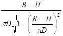
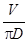
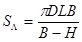
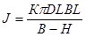
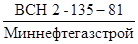

МИНИСТЕРСТВО
СТРОИТЕЛЬСТВА ПРЕДПРИЯТИЙ
НЕФТЯНОЙ И ГАЗОВОЙ ПРОМЫШЛЕННОСТИ
ВСЕСОЮЗНЫЙ НАУЧНО-ИССЛЕДОВАТЕЛЬСКИЙ ИНСТИТУТ
ПО СТРОИТЕЛЬСТВУ МАГИСТРАЛЬНЫХ ТРУБОПРОВОДОВ
СТРОИТЕЛЬСТВО МАГИСТРАЛЬНЫХ И ПРОМЫСЛОВЫХ ТРУБОПРОВОДОВ
Противокоррозионная И тепловая изоляция
ВСН 008-88
Миннефтегазстрой
Москва 1989
РАЗРАБОТАНЫ И ВНЕСЕНЫ: Всесоюзным научно-исследовательским институтом по строительству магистральных трубопроводов (ВНИИСТ) Миннефтегазстроя -
К.И. Зайцев - руководитель темы, канд. техн. наук;
В.И. Дудаев - ответственный исполнитель;
Л.С. Прохорская - канд. техн. наук;
А.И. Слуцкий;
С.Г. Низьев - канд. техн. наук;
Л.П. Семенов - канд. техн. наук;
Г.И. Крус - канд. хим. наук;
В.Б. Серафимович - канд. хим. наук;
Т.С. Воронина - канд. хим. наук;
В.И. Орехов - канд. техн. наук;
А.А. Лейнова - канд. техн. наук;
И.В. Газуко - канд. хим. наук;
Л.В. Иванова - канд. хим. наук;
В.А. Рублев - канд. техн. наук (СибНИПИгазстрой МНГС).
ПОДГОТОВЛЕНЫ К УТВЕРЖДЕНИЮ: Главным научно-техническим управлением Миннефтегазстроя - В.И. Рыжков, В.В.Кузнецов.
С введением в действие «Строительства магистральных и промысловых трубопроводов. Противокоррозионная и тепловая изоляция» ВСН 008-88/Миннефтегазстрой утрачивают силу:
«Инструкция по применению (импортных изоляционных полимерных лент и липких оберток» ВСН 2-84-82/Миннефтегазстрой;
«Инструкция по применению отечественных полимерных изоляционных лент и оберточных материалов для изоляции трубопроводов» ВСН 31-82/Миннефтегазстрой;
«Правила производства работ по изоляции труб и трубных секций мастичными покрытиями в базовых условиях» ВСН 201-86/Миннефтегазстрой;
«Нанесение покрытия «Пластобит-40» на наружную поверхность магистральных трубопроводов при строительстве и капитальном ремонте» ВСН 205-86/Миннефтегазстрой;
«Материалы изоляционные для защиты трубопроводов от коррозии. Номенклатура показателей» ОСТ 102-76-63.
СОГЛАСОВАНЫ:
Госстрой СССР;
Мингазпром СССР;
Миннефтепром СССР;
ССО Южтрубопроводстрой»;
ССО «Центртрубопроводстрой»;
ССО «Арктикнефтегазстрой».
1.1. Настоящие нормы распространяются на изоляционные работы при сооружении стальных магистральных и промысловых трубопроводов диаметром до 1420 мм включительно и устанавливают требования к технологии нанесения противокоррозионных и теплоизоляционных наружных покрытий.
1.2. Изоляционные работы следует осуществлять в соответствии с требованиями проекта, СНиП III-42-80, СНиП 2.05.06-85, СНиП 3.04.03-85, СНиП 2.03.11-85, ГОСТ 12.3.016-87, СНиП III-4-80, СНиП 3.01.01-85, СНиП 2.014-88, ГОСТ 25812-83 и ГОСТ 16381-77 и настоящих норм.
1.3. Тип и конструкции защитных покрытий трубопроводов принимаются в соответствии с проектом и приведены в приложении 1.
1.4. Сложность конструктивных решений промысловых трубопроводов, суровые природно-климатические условия северных районов требуют максимального использования нанесения противокоррозионной и тепловой изоляции на трубы (или секции) в заводских и базовых условиях.
|
Утверждены приказом Миннефтегазстроя № 332 |
Срок введения в действие |
1.5. Материалы и изделия, применяемые для изоляционных работ, определяются проектом и должны соответствовать требованиям научно-технических документов (НТД) на них. Вновь разработанные материалы для изоляции, в том числе и импортные, вводятся в практику строительства трубопроводов в установленном порядке постановки продукции на производство.
Технология изоляционных работ в трассовых условиях включает:
подготовку изоляционных материалов;
сушку или подогрев изолируемой поверхности;
очистку;
нанесение грунтовки и (или) покрытия;
контроль качества покрытия.
Изоляционные покрытия должны наноситься, как правило, механизированным способом, обеспечивающим проектную толщину изоляционного слоя и его сплошность. Очистку и нанесение грунтовки на трубопроводы следует производить в зависимости от диаметра трубы соответствующими самоходными очистными машинами типа ОМ.
Изоляцию следует наносить в зависимости от диаметра трубы и вида покрытия соответствующими самоходными машинами типа ИМ для битумных покрытий или типа комбайна ОМП для ленточных покрытий.
Нанесение изоляционного покрытия на влажную поверхность труб во время дождя, тумана, снега и сильного ветра не разрешается.
2.1. Подготовка изоляционных материалов
Грунтовки битумно-полимерные
2.1.1. Битумно-полимерные грунтовки изготовляются в заводских условиях и рекомендуются для круглогодичного применения.
Грунтовку перед использованием следует тщательно размешать до полного исчезновения возможного осадка, затем измерить вязкость и процедить через металлическое сито с 400 отверстиями на 1 см2.
2.1.2. Загустевшую грунтовку заводского изготовления разрешается разбавлять (но не более чем на 10 % от объема грунтовки); при этом разбавитель выбирается в соответствии со спецификацией на грунтовку.
Грунтовка битумно-бензиновая
2.1.3. Допускается приготовление грунтовки битумно-бензиновой на месте производства изоляционных работ путем растворения битума в бензине в соотношении 1:3 по объему или 1:2 по массе.
2.1.4. Составы битумных грунтовок в зависимости от сезона нанесения (для летнего и зимнего времени) приведены в табл. 1.
|
Состав грунтовок |
|
|
1 |
2 |
|
Битумная для летнего времени |
Битум БН 90/10 или БН 70/30 по ГОСТ 6617-75 или БНИ-V по ГОСТ 9812-74 |
|
Бензины неэтилированные: авиационный Б-70 по ГОСТ 1012-72 или автомобильный А-72 и А-76 по ГОСТ 2084-77 |
|
|
Битумная для зимнего времени |
Битум БН 70/30 по ГОСТ 6617-76 или БНИ-IV по ГОСТ 9812-74 |
|
Бензин неэтилированный авиационный Б-70 по ГОСТ 1012-72 |
Двухкомпонентная грунтовка
2.1.5. Двухкомпонентные грунтовки приготовляются непосредственно перед нанесением в соответствии с НТД на них.
2.1.6. Не допускается заготавливать грунтовку на следующие сутки или оставлять неизрасходованной в баке изоляционной машины на несколько часов. Если подготовленная грунтовка не использована полностью, то необходимо освободить бак изоляционной машины и систему подачи; после слива грунтовки всю систему нужно промыть бензином.
Битумные мастики заводского изготовления
2.1.7. Мастики битумно-полимерные типа Изобитеп и мастики битумно-резиновые заводского изготовления в трассовых условиях расплавляют в котлах.
2.1.8. Мастику очищают от упаковочной бумаги и измельчают на куски массой 3 - 5 кг, загружают в плавильный котел установки УБК-81 или БК-4, в котором оставляют от предыдущей плавки примерно 20 %-ную часть объема котла, разогретой до температуры 160 - 180 °С. Общий объем мастики не должен превышать 2/3 емкости котла.
2.1.9. При плавке битума или битумных мастик в котел добавляют несколько капель пеногасителя (полиметилсилоксановой жидкости ПМС-200). Это позволяет в 1,5 - 2 раза ускорить процесс приготовления мастики.
2.1.10. Разогретую до 170 - 190 °С мастику следует перекачать во 2-й котел установки УБК-81. В этом котле мастику выдерживают при температуре 160 - 180 °С не более 3 ч до полного выпаривания влаги.
Приготовление битумно-резиновой мастики на месте производства работ
2.1.11. Изготовление битумно-резиновых мастик допускается в полевых условиях в битумоплавильных установках УБК-81 или передвижных котлах, оборудованных устройствами для механического перемешивания.
2.1.12. Мастики на месте производства работ готовятся следующим образом:
битум, поступающий с завода в отвержденном состоянии, очищается от упаковочной бумаги и дробится на куски массой 3 - 5 кг. В расплавленный битум, вводится расчетное количество разрыхленной и просушенной резиновой крошки.
Битумно-резиновая мастика приготавливается непрерывным перемешиванием компонентов при температуре 170 - 190 °С в течение 2 - 4 ч.
2.1.13. Для получения пластифицированной мастики пластификатор вводят за 30 мин до окончания приготовления мастики, непрерывно перемешивая.
2.1.14. Марки битумной мастики в зависимости от условий применения выбираются в соответствии с требованиями приложения 2.
Приготовление пластифицированной мастики для покрытия - Пластобит-40
2.1.15. Для получения пластифицированной мастики расплавленные мастики Изобитэп-Н, МБР-100 или МБР-90 перемешивают с расчетным количеством пластификатора при температуре не выше плюс 160 - 170 °С. В качестве пластификатора применяется дизельное топливо в соотношении 94:6 по массе.
2.1.16. Показатели, пластифицированной мастики должны соответствовать требованиям, указанным в табл. 2.
|
Норма |
|
|
Температура размягчения мастики по ГОСТ 15836-79, °С, не менее |
80 |
|
Глубина проникания иглы при 25 °С по ГОСТ 15836-79, десятые доли мм, не менее |
30 |
|
Растяжимость при 25 °С по ГОСТ 15836-79, см (не менее) для мастик на основе: |
|
|
МБР |
3 |
|
Изобитэп-Н |
8 |
2.2. Подготовка поверхности труб и трубопроводов под противокоррозионные покрытия
2.2.1. Поверхность трубопровода перед изоляцией должна быть высушена и очищена от грязи, ржавчины, неплотно сцепленной с металлом окалины, пыли, земли и наледи, а также обезжирена от копоти и масла. При температуре воздуха ниже плюс 10 °С поверхность трубопровода необходимо подогреть до температуры не ниже плюс 15 °С (но не выше плюс 50 °С).
После очистки поверхность металла должна оставаться шероховатой и обеспечивать достаточное сцепление защитного покрытия с трубой. Характеристика шероховатости RE металлических поверхностей под лакокрасочные покрытия выбирается в зависимости от условий эксплуатации, вида, типа и класса покрытия и должна соответствовать требованиям ГОСТ 9.032-74.
2.2.2. Трубы и трубопроводы очищают механическим способом с помощью вращающихся щеток, иглофрез дробеструйным и дробеметным методами. В трассовых условиях наружные поверхности трубопроводов очищают самоходными очистными машинами. С помощью шлифмашинок с поверхности трубопровода удаляются брызги металла, шлака, а также острые выступы и заусенцы.
2.2.3. Сушка и подогрев поверхности осуществляется с помощью сушильных печей и установок.
2.2.4. Степень очистки поверхности труб перед нанесением покрытий должна соответствовать виду защитного покрытия и соответствовать данным, приведенным в табл. 3.
2.2.5. Характеристику очищенной стальной поверхности от окислов определяют визуальным методом с помощью передвижения пластины из прозрачного материала размером 25´25 мм с взаимно-перпендикулярными линиями, образующими квадратики размером 2,5´2,5 мм. Инструментальным методом характеристику очистки поверхности можно определить приборами типа УКСО (ВНИИСТ).
2.2.6. С труб, предназначенных под стеклоэмалевые, металлические, лакокрасочные и термоусадочные (горячего нанесения) защитные покрытия, заводское консервационное покрытие удаляется.
2.2.7. Под битумно-мастичные, пластобитные, антикоррозионные смазки и ленточные покрытия холодного нанесения плотное консервационное покрытие, прочно связанное с трубой, не снимается, если не снижает адгезионных свойств наносимой изоляции; труба очищается лишь от поверхностных загрязнений и ржавчины. После очистки поверхности грунтовка наносится по консервационному покрытию.
|
Степень очистки стальной поверхности |
Характеристика очищенной поверхности |
|
|
1 |
2 |
3 |
|
Стеклоэмалевые и металлические |
1 |
При осмотре с 6х увеличением окалина и ржавчина не обнаруживаются |
|
Лакокрасочные на основе синтетических смол |
2 |
При осмотре невооруженным глазом окалина и ржавчина не обнаруживаются |
|
Лакокрасочные на основе природных смол. Термоусадочные (горячего нанесения) и ленточные (холодного нанесения) |
3 |
Не более чем на 5 % поверхности трубы имеются пятна и полосы прочно сцепленной окалины, точки ржавчины, видимые невооруженным глазом; при перемещении по поверхности прозрачной пластины размером 25´25 мм на любом из участков окалиной и ржавчиной занято не более 10 % площади пластины |
|
Битумно-мастичные, пластобитные и антикоррозионные смазки |
4 |
Не более чем на 10 % поверхности трубы имеются пятна или полосы прочно сцепленной окалины и ржавчины, видимые невооруженным глазом; |
|
при перемещении по поверхности прозрачной пластины размером 25´25 мм на любом из участков окалиной и ржавчиной занято не более 30 % площади пластины |
2.3. Огрунтование поверхности
2.3.1. Очищенную поверхность трубопровода следует сразу же огрунтовать. Поверхность трубопровода при нанесении грунтовки должна быть сухой, наличие влаги в виде пленки, капель, наледи или инея, а также следов копоти и масла не допускается.
2.3.2. Грунтовку перед нанесением следует тщательно перемешать; она не должна содержать сгустков и посторонних включений.
2.3.3. Для равномерного растирания грунтовки на изоляционной машине (или комбайне) устанавливается вращающееся полотенце.
2.3.4. Температура грунтовок при нанесении должна быть в пределах от плюс 10 до плюс 30 °С, поэтому при температуре ниже плюс 10 °С грунтовку следует выдержать не менее 48 ч в помещении с температурой не ниже плюс 15 °С (но не выше плюс 45 °С) или подогреть на водяной или масляной бане с температурой не выше плюс 50 °С.
В районах с жарким климатом допускается температура грунтовки выше плюс 30 °С (до температуры окружающего воздуха).
2.3.5. Слой грунтовки должен быть сплошным, ровным и не иметь сгустков, подтеков и пузырей.
2.4. Изоляция трубопроводов битумными покрытиями
2.4.1. Перед началом изоляционных работ на самоходных машинах проверяют правильность установки очистных, праймирующих и изолирующих устройств.
На изолирующей обечайке необходимо отрегулировать и зафиксировать величину нужного зазора между трубой и обечайкой.
Заливают грунтовку в праймерный бак машины и производят очистку и грунтование трубопровода. Битумную мастику заливают в ванну машины и, включив битумные насосы на 3 - 5 мин, следят за циркуляцией мастики. На шпули машины надевают рулонные материалы, концы которых закрепляют на трубопроводе.
Грунтовка, наносимая на очищенную и сухую поверхность трубопровода, должна покрывать всю поверхность ровным слоем. Пропуски, подтеки, сгустки и вздутия грунтовки не допускаются.
2.4.2. Изоляционные покрытия на битумной основе наносят на очищенную поверхность трубопровода сразу же после высыхания грунтовки «до отлипа».
2.4.3. Машину на первой скорости движения передвигают на 2 - 3 м трубопровода, затем ее останавливают и проверяют качество нанесенного покрытия. Обнаруженные недостатки в работе машины устраняют при полной ее остановке.
2.4.4. Перед началом работы шпули изоляционной машины должны быть отрегулированы и закреплены под углом, обеспечивающим равномерное натяжение полотнища и установленный размер нахлеста витков. Заниженный угол наклона шпуль приводит к большому нахлесту, а увеличенный угол наклона приводит к образованию просветов между витками оберточного материала.
2.4.5. Изоляционную мастику следует наносить по периметру и длине трубопровода ровным слоем заданной толщины без пузырей и посторонних включений. Стеклохолст должен полностью погружаться в мастичный слой, так как только в этом случае достигается наиболее полное армирование покрытия.
2.4.6. Армирование битумного покрытия стеклохолстом и обертку защитными рулонными материалами необходимо производить спирально без гофров, морщин и складок с нахлестом края последующего витка на предыдущий не менее 30 мм. Нахлест концов рулонного материала должен быть не менее 100 мм.
На качество изоляционного покрытия существенное влияние оказывает усилие натяжения полотнища материала при нанесении на трубопровод армирующих материалов по горячей мастике; натяжение должно быть тщательно отрегулировано тормозными устройствами шпуль изоляционной машины.
2.4.7. Ширина рулонного материала для изоляции должна составлять 0,5 - 0,7 диаметра трубопровода, но не более 50 см.
Важным фактором, влияющим на качество изоляционного покрытия, является соблюдение температурного режима мастики при ее нанесении на трубопровод.
2.4.8. Толщина наносимого битумного изоляционного слоя, его сплошность и прилипаемость, степень погружения стеклохолста в мастичный слой в основном зависят от вязкости мастики, которую регулируют изменением температуры в ванне изоляционной машины в зависимости от температуры окружающего воздуха. Температура мастики, необходимая для получения покрытия за один проход, приведена в табл. 4.
|
Температура мастики в ванне изоляционной машины, С° |
|
|
Свыше 30 |
145 |
|
От 30 до 10 |
150 - 155 |
|
От 10 до минус 5 |
155 - 165 |
|
От минус 5 до минус 15 |
165 - 175 |
|
От минус 15 до минус 25 |
175 - 185 |
|
Ниже минус 25 |
185 - 190 |
2.4.9. Изоляционно-укладочные работы по нанесению битумных покрытий допускается производить при температуре окружающего воздуха не ниже минус 30 °С.
2.4.10. При совмещенном способе выполнения работ уложенный в траншею трубопровод в тот же день должен быть присыпан рыхлым грунтом.
При раздельном способе выполнения изоляционно-укладочных работ изолированный трубопровод необходимо укладывать на деревянные лежки с мягкими прокладками на них. Укладка в траншею изолированного трубопровода при раздельном способе производится при температуре не ниже минус 20 °С.
2.5. Изоляция трубопроводов покрытием Пластобит-40
2.5.1. Покрытие Пластобит-40 следует наносить при температуре окружающего воздуха не ниже минус 40 °С.
2.5.2. Элементы покрытия Пластобит-40: грунтовки, битумно-резиновые мастики, изоляционные ленты и обертка наносятся на трубопровод в соответствии с требованиями настоящих ВСН для каждого из этих материалов.
2.5.3. Намотка поливинилхлоридной ленты на трубопровод должна производиться сразу же по слою горячей мастики. Выдавливание и утончение битумного слоя от усиленного натяга ленты не допускается.
2.6. Изоляция трубопроводов ленточными покрытиями
2.6.1. Клеевые грунтовки, изоляционные ленты и обертки (приложения 3, 4) необходимо наносить на трубопровод одновременно и, как правило, механизированным способом при совмещенном методе производства изоляционно-укладочных работ.
2.6.2. Изолированный трубопровод следует незамедлительно (в течение одной смены) уложить в траншею, дно которой должно быть тщательно выровнено, и присыпать или полностью засыпать грунтом.
Если специфика участка (например, на переходах) не позволяет произвести укладку трубопровода в траншею в течение одной смены, необходимо вплоть до окончания работ защитить изоляционное покрытие от прямого воздействия атмосферы.
В этом случае непосредственно перед укладкой, футеровкой и обетонированием необходимо проверить сплошность покрытия и (выборочно) прочность адгезионной связи изоляционной ленты с трубой.
2.6.3. Для каждого типа изоляционной ленты применяют соответствующие клеевую грунтовку и обертку. Замена клеевых грунтовок различных фирм запрещается.
2.6.4. В скальных, щебенистых, сухих комковатых глинистых и суглинистых грунтах изолированный трубопровод следует укладывать на подсыпку из мягкого грунта толщиной не менее 10 см присыпать таким же грунтом на 20 см с обязательной подбивкой пазух, при соответствующем обосновании вместо подсыпки можно применять другие способы защиты от механических повреждений.
2.6.5. Нормы расхода лент, оберток и грунтовок, а также формулы расчета приведены в приложении 5.
2.6.6. Очистку поверхности трубопроводов производят следующими самоходными очистными машинами:
ОМ-113 при диаметрах труб (мм) 89 - 168;
ОМЛ-8А « « « 168 - 325;
ОМ-52Г « « « 325 - 529;
ОМЛ-4 « « « 631 - 820;
ОМ-121 « « « 1020 - 1220;
ОМ-1422 « « « 1420;
2.6.7. Клеевые грунтовки, изоляционные ленты и обертки наносят на поверхность трубопровода, как правило, за один проход следующими самоходными изоляционными машинами:
ИЛ-521 при диаметрах труб (мм) 325 - 529;
ИЛ-821 « « « 631 - 820;
ИЛ-1422 « « « 1020 - 1420;
Комбайнами ОМ-522П, ОМ-1221П, ОМ-1423П.
На трубы диаметром 57 - 114 мм ленты и обертки наносят приспособлением ПИЛ-1, причем в этом случае поверхность подготавливают и огрунтовывают с помощью очистной машины ПО-1.
Можно применять также импортные машины, обеспечивающие необходимую степень очистки и качественное нанесение лент и оберток.
2.6.8. Перед началом работ очистную, изоляционную машины или комбайн необходимо тщательно осмотреть, проверить укомплектованность рабочим инструментом, а затем опробовать на холостом ходу.
2.6.9. Изоляционная машина или комбайн обязательно должны быть хорошо заземлены, а также оборудованы специальным устройством для снятия статического электричества с поверхности ленты.
2.6.10. Для обеспечения равномерного покрытия очищенной поверхности трубопровода грунтовку перед нанесением следует тщательно перемешать. Слой грунтовки должен быть сплошным и не иметь подтеков, сгустков и пузырей. Грунтовку в случае необходимости непосредственно перед нанесением допускается разбавлять бензином Б-70 или циклогексаном, вводя его не более 10 % от разбавляемого объема.
Разбавление этилированным бензином не допускается, так как он резко ухудшает адгезионные свойства.
Для равномерного растирания грунтовки на изоляционной машине или комбайне следует устанавливать вращающееся полотенце.
2.6.11. Изоляционные ленты следует наносить на трубопровод по свеженанесенной невысохшей грунтовке. При температуре окружающего воздуха ниже плюс 10 °С рулоны ленты и обертки перед нанесением необходимо выдерживать не менее 48 ч в теплом помещении с температурой не ниже плюс 15 °С (но не выше плюс 45 °С). При температуре окружающего воздуха ниже плюс 3 °С поверхность изолируемого трубопровода необходимо подогревать до температуры не ниже плюс 15 °С (но не выше плюс 50 °С).
На поверхности трубы не должно быть следов копоти и масла.
2.6.12. Изоляционные ленты и обертки необходимо наносить без гофров, перекосов, морщин, отвисаний, с величиной нахлеста, регламентированной СНиП III-42-80.
2.6.13. Рулоны лент и оберток перед применением должны быть хорошо отторцованы.
2.6.14. Для обеспечения плотного прилегания лент и оберток по всей защищаемой поверхности и создания герметичности в нахлесте необходимо постоянное натяжение материала с усилиями, приведенными в табл. 5.
Усилие натяжения измеряют динамометром.
2.6.15. Перед нанесением лент и оберток изоляционную машину необходимо отрегулировать по диаметру изолируемого трубопровода, ширине и величине нахлеста. Рабочие параметры машин (угол наклона tgg шпуль, скорость движения Vм, число оборотов цепочного обода N) назначают по формулам:
tgg = 
N
= 
где:
g - угол наклона шпуль к оси трубы, град;
D - наружный диаметр изолируемого трубопровода, м;
В - ширина ленты или обертки, м;
П - величина нахлеста витков ленты, м;
Vм - скорость движения изоляционной машины, м/мин;
S - шаг намотки ленты, м;
N - число оборотов цевочного обода со шпулями, об/мин;
p = 3,14;
V - линейная скорость намотки ленты (принимается не более 50 м/мин).
|
Температура воздуха, °С |
Натяжение ширины, кгс/см, |
|
Плюс 40 Плюс 20 Минус 30 |
1,0 - 1,5 1,5 - 2,0 2,0 - 3,0 |
2.6.16. При установке на шпулю нового рулона ленты конец нанесенного полотенца нужно приподнять на 10 - 15 см и под него подложить начало разматываемого рулона. Эти концы разглаживают на изолируемой поверхности и затем приминают рукой до нахлеста их последующим витком ленты.
2.6.17. Защитные обертки, не имеющие прочного сцепления с изоляционным покрытием трубопровода, должны быть закреплены в конце полотнища, а при необходимости - через каждые 10 - 12 м. Для закрепления оберток используют специальные бандажи, клей и т.п.
2.6.18. При изоляции трубопроводов в околошовной зоне допускается, как исключение, наличие узкой (1,0 - 1,5 см) полосы с неплотным прилеганием изоляционной ленты, неплотности при засыпке трубопровода должны исчезнуть. Проверку производят шурфованием трубопровода.
2.6.19. Регулярно следует проверять величину натяжения ленты и состояние ходовых колес и при необходимости производить их регулировку.
2.6.20. Поверхность трубопровода необходимо предохранять от попадания на нее смазочного масла из трансмиссии и воды из системы охлаждения очистной и изоляционной машин.
2.7. Нанесение лакокрасочных покрытий на надземные трубопроводы
2.7.1. Лакокрасочные покрытия наносят в соответствии с требованиями проекта, СНиП 3.04.03-65, СНиП 2.03.11-85.
2.7.2. Сушку отдельных слоев лакокрасочных покрытий следует производить в строгом соответствии с технологическими требованиями. Нанесение лакокрасочных покрытий осуществляют с помощью краскораспылителей или вручную кистями и валиками.
3.1. Битумное покрытие
3.1.1. Конструкция и толщина битумно-мастичного покрытия должна соответствовать проекту.
3.1.2. Покрытие наносится на предварительно осушенную и очищенную поверхность труб и трубных секций.
3.1.3. Подготовка труб к изоляции (сушка, очистка и нанесение битумно-мастичного покрытия) производится с использованием линии изоляции труб типа ПТЛ. На вращающиеся и поступательно перемещающиеся по линии трубы последовательно наносятся: адгезионная грунтовка слой битумной мастики, армирующий стеклохолст, второй слой мастики, второй слой стеклохолста и защитная обертка. Температура мастики должна составлять плюс 145 - 170 °С. Стеклохолст наносится без гофров, морщин и складок с нахлестом не менее 3 см и натяжением, необходимым для полного его погружения в слой битумной мастики. Изоляционное покрытие должно быть равномерным по толщине, не иметь пропусков, трещин, гофров, наплывов. Концевые участки труб и трубных секций длиной 150 - 200 мм должны оставаться неизолированными для последующей сварки изолированных труб в трассовых условиях. В случае использования электроконтактной сварки длина неизолированных концевых участков труб должна составлять 600 - 650 мм.
3.2. Полимерное ленточное покрытие
3.2.1. Полимерная лента и обертка наносятся на вращающиеся и поступательно перемещающиеся по линии трубы,·и трубные секции методом спиральной намотки. Полимерное ленточное покрытие должно наноситься на сухую,·предварительно очищенную и огрунтованную поверхность труб при температуре воздуха не менее плюс 15 °С и температуре труб плюс 15 - 40 °С.
3.2.2. Защитная обертка наносится одновременно с полимерной лентой поверх ленточного слоя. Усилие натяжения должно составлять 1,5 - 3,0 кгс/см ширины ленты и обертки.
3.2.3. При применении нелипкой защитной обертки типа ПЭКОМ (ТУ 102-411-86) концы ее должны закрепляться от разматывания двумя витками липкой ленты.
Концы труб и трубных секций длиной 150 - 200 мм (600 - 650 мм для электроконтактной сварки) должны оставаться неизолированными.
4.1. Ремонт заводского изоляционного покрытия следует производить на трубосварочной базе после сварки труб в секции, а также на трассе после сварки труб или секций в плеть до спуска трубопровода в траншею.
4.2. Отслоившееся от металла покрытие в зоне дефекта должно быть удалено, а края оставляемого покрытия зачищены шлифовальной машиной с круглой металлической щеткой. Переход от металла к покрытию должен иметь угол скоса, не более 30 °С.
Участок вокруг дефекта необходимо тщательно очистить от загрязнений, наледи, влаги на расстоянии не менее 20 см от края оставляемого покрытия.
4.3. Поверхность металла на участке дефекта необходимо очищать от ржавчины, пыли и влаги с помощью стальных проволочных щеток.
4.4. До начала ремонта повреждения и при температуре трубы ниже плюс 10 °С очищенную поверхность заводского покрытия и металла трубы равномерно нагревают до температуры плюс 30 - 40 °С. При применении газовой горелки пламя направляют ближе к центру повреждения, при этом следует избегать перегрева (коробления, отслаивания, плавления) покрытия.
При ремонте повреждений противокоррозионных покрытий применяют конструкции усиленного типа.
Технология ремонта повреждений полиэтиленового покрытия
4.5. Ремонту подлежат все сквозные повреждения покрытия, обнаруженные дефектоскопом, а также повреждения с оставшимися на трубе слоем полиэтилена толщиной менее 1,5 мм.
4.6. Ремонт локальных или узких протяженных дефектов производят с использованием ленты-заполнителя типа Герлен-Т (ТУ 400-1-186-79) и полиэтиленовых липких лент с соответствующими грунтовками, применяющимися для трассовой изоляции трубопроводов большого диаметра.
Очищенную и подогретую зону дефекта грунтуют и заполняют вровень с заводским покрытием лентой Герлен, предварительно освободив ее от бумаги и холста.
С помощью валика или мастерка выравнивают поверхность заполнителя, одновременно прижимая его и добиваясь полного прилипания Герлена к металлу трубы и краям неповрежденного покрытия по периметру дефекта. На заполненную Герленом поверхность дефекта и заводское покрытие на расстояние не менее 20 см по периметру дефекта наносят слой грунтовки.·По грунтовке после ее высыхания «до отлипа» наносят сначала одну заплату из липкой ленты с нахлестом на неповрежденное покрытие не менее чем на 10 см, а на нее (тоже после нанесения слоя грунтовки, который можно не сушить) вторую заплату с нахлестом на неповрежденное покрытие не менее чем на 15 см.
4.7. При дефектах большого размера, имеющих протяженность в узкой части более 30 см, ленту Герлен допускается наносить только в зоне перехода от заводского покрытия к оголенной поверхности трубы. В этом случае Герлен наносят в виде полоски 40 - 60 мм, которую прикатывают и разравнивают таким образом, чтобы угол перехода от металла к поверхности заводского покрытия был не более 30 °С. После этого производят ремонт липкими лентами по загрунтованной поверхности, как это указано в п. 4.7. настоящих ВСН.
4.8. Если на отдельных участках имеется большое количество мелких сквозных повреждений покрытия (15 % и более от общей площади кольцевого участка), рекомендуется после заполнения зон дефектов лентой Герлен наносить на загрунтованную поверхность липкую ленту не в виде заплат, а в виде кольцевой (в 2 слоя) или спиральной (с 50 %-ным нахлестом + 3 см) намотки на трубу. Вместо липкой ленты в этих случаях можно применять термоусаживающиеся манжеты. Нахлест на поврежденное покрытие в любом случае должен быть не менее 75 мм. Если повреждения заводской изоляции составляют более 50 % общей площади участка трубопровода, необходимо переизолировать эти места, нанося на очищенную сухую поверхность по соответствующей грунтовке покрытие из двух слоев полимерной ленты и двух слоев обертки путем намотки.
4.9. При температуре транспортируемого продукта не выше плюс 40 °С очищенные и огрунтованные углубления в местах повреждения покрытия площадью до 250 см вместо Герлена допускается заполнять мастикой на битумной основе с температурой размягчения не ниже плюс 75 °С. После выравнивания мастики горячими металлическими шпателями на эти участки по грунтовке наносят в два слоя заплаты из липких лент способом, описанным в п. 4.6.
4.10. При заполнении битумной мастикой большого количества дефектов (более 15 % площади) на отдельных участках ленту рекомендуется наносить не в виде заплат, а в соответствии с п. 4.8.
Технология ремонта повреждения эпоксидных покрытий
4.11. Ремонт повреждений эпоксидного покрытия следует производить жидкими эпоксидными композициями (ГОСТ 10277-76 и ТУ 6-10-1398-78) или липкими изоляционными лентами и термоусаживающимися манжетами.
4.12. При использовании липких лент повреждения заклеиваются по грунтовке заплатой в два слоя в соответствии с п. 4.6. Если на отдельных участках трубы имеется большое количество повреждений покрытия (15 % и более от общей площади участка), а также повреждения размером более 250 см2, то эти места переизолируют нанесением путем намотки на имеющуюся изоляцию по соответствующей грунтовке покрытие, состоящее из двух слоев полимерной ленты и одного слоя обертки, или с помощью термоусаживающихся манжет с нахлестом на заводское покрытие не менее 75 мм.
4.13. При ремонте повреждений эпоксидной смолой ЭД-20 рекомендуется вводить в ее состав наполнители: тальк или кварц, или доломит и др. в количестве 30 - 40 %. Разрешается вводить в смолу в качестве наполнителя порошковую краску ПЭП-534 (ТУ 6-10-18-90-83) в количестве 30 - 40 %.
4.14. В смесь смолы с наполнителем добавляют 8 - 10 % отвердителя и тщательно перемешивают. Композиция с отвердителем пригодна для употребления в течение только 2 ч.
4.15. Эпоксидную композицию наносят на очищенную и подогретую газовой горелкой (до плюс 40 - 50 °С) поверхность металла металлическим шпателем.
4.16. Для ускорения времени отверждения эпоксидных композиций разрешается подогрев наполнителя до плюс 80 - 100 °С (кроме ПЭП-534) и последующий его ввод в смолу в горячем виде.
4.17. При ремонте повреждений жидкими эпоксидными композициями для заклеивания применяют заплату из липкой ленты, наносимой в один слой по клеевой грунтовке с перекрытием не менее чем на 10 см.
Ремонт повреждений ленточного покрытия
4.18. Поверхность трубы, подлежащая ремонту, должна быть подготовлена в соответствии с п. 2.2.1.
4.19. Все дефекты на участках изоляция следует исправлять сразу после их обнаружения.
4.20. Поврежденный участок необходимо освободить от обертки, изоляционной ленты и острым концом ножа подравнять края изоляционного покрытия. Ветошью, смоченной циклогексаном или бензином Б-70, с поврежденного участка надо тщательно удалить пыль, грязь, масляные пятна и влагу. Затем на ремонтируемый участок следует нанести соответствующую клеевую грунтовку и заплатку из липкой ленты, приглаживая ее рукой до полного прилипания; заплата должна перекрывать дефект не менее чем на 15 см в каждую сторону.
4.21. Значительные повреждения изоляции, места захлестов, вставок, катушек и др. следует ремонтировать, нанося липкую ленту спирально по клеевой грунтовке. При этом ее наносят, захватывая на 15 см имеющуюся изоляцию на смежных участках, с нахлестом 50 % ширины рулона плюс 3 см.
4.22. Сплошность отремонтированного изоляционного покрытия, следует проверять дефектоскопом до нанесения защитной обертки. Проверенный и защищенный оберткой участок отремонтированной изоляции трубопровода следует сразу же засыпать мягким грунтом.
Ремонт повреждений битумных покрытий
4.23. Изоляцию с повреждениями или дефектами необходимо отремонтировать. Это относится к дефектам видимым (трещины, отрывы, вмятины) и скрытым, обнаруженным дефектоскопом (проколы, посторонние включения, пузыри).
4.24. Изоляцию, как правило, ремонтируют теми же материалами. Если изоляция имеет наружную обертку, то перед ремонтом ее следует удалить. Наносить изоляционное покрытие по обертке запрещается.
4.25. Изоляционное покрытие в местах ремонта должно быть очищено от грязи и остатков нарушенной изоляции. Для устранения небольших повреждений и дефектов накладывают заплаты. Дефектное место предварительно следует подогреть.
4.26. Для исправления некачественной или поврежденной изоляции и устранения пропусков накладывают пояски из битумной мастики и стеклохолста, а при необходимости - защитную обертку по всей окружности трубы. Можно также эти места изолировать (как сварные стыки) полимерной липкой лентой.
4.27. При укладке трубопроводов необходимо принимать все меры к сохранению изоляции (укладку производить только на эластичных полотенцах, очистить и выровнять дно траншеи, отремонтировать повреждения изоляции после укладки).
Общие требования к изоляции сварных стыков труб
5.1. Для изоляции стыков могут применяться следующие конструкции усиленного типа покрытий:
муфтовое или манжетное, состоящее из термоусаживающейся полиэтиленовой основы со слоем термоплавкого клея на внутренней стороне;
ленточное, состоящее из 1 - 2 слоев термоусаживающейся ленты горячего нанесения; число слоев ленты зависит от толщины лент;
пластобитное (типа Пластобит-40), состоящее из грунтовки, пластифицированной битумной мастики, поливинилхлоридной полимерной нелипкой ленты и слоя обертки типа ПЭКОМ;
битумное, состоящее из грунтовки, слоя изоляционной мастики на основе битумов, 1 - 2 слоев стеклоармировки и слоя защитной обертки;
ленточное холодного нанесения, состоящее из высохшего до отлипа слоя грунтовки, двух слоев полиэтиленовой изоляционной липкой ленты и двух слоев защитной полимерной липкой обертки. Допускается слой полимерной обертки заменять липкой полимерной лентой слой на слой.
5.2. Основным и предпочтительным способом изоляции сварных стыков труб с заводским покрытием должна быть технология с термоусаживающимися муфтами и манжетами.
5.3. Для изоляции стыков вручную могут применяться липкие ленты.
5.4. Работы по изоляции стыков производятся как в стационарных условиях (на трубосварочных базах после сварки труб в секции), так и на трассе - после сварки секций или отдельных труб в плеть механизированным способом.
5.5. Ленточные покрытия в трассовых условиях следует наносить с помощью машин типа ИС или МС, а в базовых - с помощью установок типа УИ или ПТЛ.
При механизированном способе работ по очистке и изоляции стыков на трассе необходимо, чтобы трубопровод был приподнят над землей на высоту, обеспечивающую их выполнение.
5.6. При ручном способе очистки и изоляции стыков зазор между трубопроводом и поверхностью строительной полосы должен быть не менее 0,5 м.
5.7. Материалы, применяемые для изоляции стыков, должны соответствовать проекту. При выборе материалов для изоляции стыков необходимо учитывать максимальную температуру транспортируемого продукта и температуру окружающего воздуха в период строительства.
5.8. Перед изоляцией зон сварных стыков труб необходимо провести следующие подготовительные работы:
выбрать способ нанесения покрытия и ознакомиться с технологией изоляционных работ;
установить соответствие изоляционных материалов техническим условиям;
подготовить необходимое оборудование и средства механизации работ, проверив их работоспособность, и изучить инструкции по эксплуатации;
подготовить укрытия на случай выполнения изоляционных работ в ненастную погоду;
определить объемы изоляционных работ;
получить разрешение на изоляцию зон сварных стыков.
5.9. Перед резкой или сваркой труб с заводским покрытием изоляцию в этих зонах необходимо удалить (полиэтиленовую - не менее чем на 100 мм, эпоксидную - не менее чем на 50 мм от кромки трубы или места реза).
С этой целью полиэтиленовое покрытие подплавляют газовой горелкой, подрезают и снимают шпателем, а эпоксидное удаляют электрошлифмашинкой с круглой металлической щеткой.
5.10. Края полиэтиленовых покрытий толщиной более 1 мм должны иметь плавный переход от металла трубы под углом не более 30°.
5.11. Толщина полиэтиленового покрытия на стыке должна составлять не менее 1,5 мм. Нахлест изоляции стыка на заводское покрытие должен быть не менее 7,5 см.
5.12. Тип покрытия на сварном стыке должен соответствовать типу основного защитного покрытия трубопровода. Изоляцию стыков следует производить после получения заключений о качестве сварки и очистки стыков.
Изоляция стыков битумными покрытиями
5.13. Битумное покрытие наносится на сухую, незапыленную и незагрязненную огрунтованную поверхность трубопровода.
Длительные перерывы (более одной смены) между операциями нанесения грунтовки и изоляционного покрытия не допускаются. При этом температура изолируемой поверхности должна быть не ниже 10 °С. При нарушении данных условий производится повторная огрунтовка. С огрунтованной поверхности пыль или влага удаляются сухой чистой ветошью.
5.14. Битумное покрытие на сварные стыки производится следующим образом; горячую мастику из лейки наливают на верх трубы и одновременно растирают ее полотенцем внизу. Каждый последующий слой битумного покрытия должен наноситься на вполне застывший предыдущий слой.
5.15. Обертывание рулонными материалами (армирующими и защищающими) производится по горячему слою мастики непосредственно вслед за ее нанесением, чем достигается хорошее соединение оберточных (рулонных) материалов с мастикой в покрытии.
Обертывание рулонными материалами сварных стыков по слою мастики производится с нахлестом краев не менее 30 мм, а нахлест концов лент друг на друга должен быть не менее 100 мм.
5.16. Обертка должна наноситься без морщин и складок и иметь по всей поверхности стыка полную прилипаемость к покрытию.
5.17. Толщина и конструкция покрытия на сварном стыке трубопровода должна соответствовать типу основного защитного покрытия трубопровода.
Технология нанесения покрытия ПЛАСТОБИТ-40 на поверхность сварных стыков труб
5.18. Нанесение покрытия Пластобит-40 осуществляется в соответствии с п. 2.5. настоящих ВСН.
5.19. Пластифицированная мастика наносится сверху обливом на загрунтованную поверхность сплошным слоем толщиной не менее 3 мм. Внизу трубопровода слой мастики выравнивается полотенцем.
5.20. При нанесении покрытия Пластобит-40 поверхность стыка трубопровода должна иметь температуру не ниже плюс 15 °С.
Технология изоляции сварных стыков термоусадочными муфтами, манжетами и лентами
5.21. Технология изоляции зоны сварных стыков труб термоусадочными муфтами включает следующие основные операции:
свободное надевание муфты вместе с упаковкой на концы трубы до сварки стыка трубопровода;
механическую очистку изолируемой поверхности после сварки и контроля стыка;
снятие упаковки и надвигание муфты на стык с нахлестом на заводское покрытие не менее на 7,5 см;
центровку и термоусадку муфты с прикаткой ее к изолируемой поверхности;
контроль качества покрытия в зоне сварного стыка.
5.22. В случае применения разъемных муфт (манжет) их установку на сварных стыках производят непосредственно после очистки и подогрева изолируемой поверхности.
5.23. После очистки стыковую зону подогревают газовыми подогревателями стыков типа ПТР-1421 или ручными горелками до температуры порядка плюс 120 - 140 °С, но не выше плюс 200 °С, в зависимости от типа муфт, температура подогрева регламентируется техническими условиями на муфту и контролируется прибором ТП-1.
5.24. На нагретый стык надвигают муфту, предварительно удалив с нее упаковку; центрируют разъемным центратором (конструкции СКБ Газстроймашина) или клиньями, высота которых должна быть не менее половины разности между диаметрами муфты и изолируемой трубы.
5.25. Усадку муфты начинают с ее середины, нагревая муфту пламенем газовой горелки или разъемными газовыми кольцевыми подогревателями.
Нагрев ведут с двух диаметрально расположенных сторон трубопровода. Длина пламени горелок должна быть 50 - 60 см.
Пламя горелки должно равномерно подогревать вначале среднюю часть муфты. Для этого горелку нужно держать на расстоянии не ближе 15 см от муфты и, не останавливаясь на одном месте, перемещать ее возвратно-поступательными движениями по периметру муфты до тех пор, пока она не прижмется своей серединой к поверхности сварного шва. На трубах диаметром 1020 мм и более для усадки муфт целесообразно применять одновременно четыре ручные горелки или кольцевой разъемный нагреватель.
5.26. После усадки средней части муфты этот процесс следует продолжать от середины к краям.
5.27. Если на муфте образуются гофры, необходимо прекратить нагрев этих мест, а нагревать ровные соседние участки.
5.28. Для ускорения выравнивания поверхности муфт следует применять прикатывающие ролики из фторопласта.
5.29. Правильная усадка муфты должна обеспечивать равномерное и плотное обжатие поверхности сварного соединения; из-под нахлеста муфты на заводское покрытие должен выступить клей.
5.30. Термоусадочные ленты наносятся на предварительно подогретую поверхность стыка последовательной намоткой с одновременной прикаткой.
5.31. Конец ленты следует перекрывать на 30 см, располагая его не ниже оси трубы в направлении сверху вниз.
5.32. Термоусаживающиеся ленты наносят на сварные стыки двух или трехтрубных секций в условиях трубосварочных баз на механизированной линии изоляции МНП-26 после контроля качества очистки.
5.33. Технология базовой изоляции стыков термоусадочными лентами включает следующие операции:
плеть с накопителя подается на ПАУ-1001В и устанавливается в рабочее положение; кабина с очистным и намоточным устройствами вместе с внутренним газовым подогревателем подается в зону стыка;
производится очистка зоны поворотного стыка от продуктов коррозии и грязи;
производится контроль качества очистки стыка;
осуществляется прогрев зоны стыка с помощью подогревателя до температуры:
Стальной поверхности, °С........................ 180 - 230
Полиэтиленовой изоляции
(заводского покрытия), °С......................... 140 - 150
производится изоляция зоны стыка последовательным нанесением 2 слоев ленты с одновременной прикаткой ее. Предварительно регулируется прижатие упругих роликов на прикатывающем устройстве и положение тормоза на шпуле таким образом, чтобы смещение ленты не превышало 10 мм;
закончив работу по изоляции 1-го стыка, устройство перемещается на 2-й стык и все операции повторяются.
5.34. Сформированное покрытие должно отвечать следующим требованиям:
наличие одинаковой ширины нахлеста на заводское покрытие;
копирование рельефа изолируемой поверхности, отсутствие гофр, протяженных и локальных воздушных включений;
отсутствие проколов, задиров, других, сквозных дефектов;
не допускается наличие зазора между концами ленты в одном слое; концы ленты должны быть нанесены с нахлестом не менее 10 мм;
показатель прочности адгезионной связи сформированного покрытия должен составлять к металлу и к заводскому полиэтилену не менее 3,5 кгс/см при плюс 20 °С.
5.35. После завершения усадки муфты, термоусаживающейся ленты нахлест на заводское покрытие должен быть не менее 75 мм.
5.36. Опуск и укладку трубопровода в траншею, а также его засыпку разрешается производить при температуре изоляционного покрытия стыка не выше плюс 60 °С.
Технология изоляции сварных стыков труб полимерными липкими лентами
5.37. Нанесение изоляционных лент на стыки должно осуществляться в соответствии с требованиями п. 2.6. настоящих ВСН.
5.38. При нанесении ленты «сигаретным» способом, когда ширина изолируемой зоны превышает ширину ленты, перекрытия на краях лент должны составлять не менее 75 мм при соблюдении параллельно-поочередного нанесения слоев. Перекрытия на концах лент должны составлять не менее 100 мм.
Общие требования
6.1. На все строящиеся надземные участки и воздушные переходы магистральных и промысловых трубопроводов в соответствии с проектом должны быть нанесены противокоррозионные, изоляционные покрытия, защищающие их от атмосферной коррозии.
6.2. Высокой эффективности и долговечности защиты можно достигнуть при применении цинковых или алюминиевых покрытий толщиной на менее 0,2 мм, наносимых газотермическим методом.
6.3. Газотермическим методом цинковые или алюминиевые покрытия на трубы необходимо наносить в базовых условиях, создав специальные участки металлизации, а монтажных стыков и ремонт дефектных мест труб с этими покрытиями производить в трассовых условиях, используя переносные газотермические установки.
Технологический процесс нанесения газотермическим методом цинковых и алюминиевых покрытий на трубы в базовых условиях
6.4. Технологический процесс нанесения газотермическим методом цинковых и алюминиевых покрытий на трубы включает в себя следующие операции:
тщательную очистку наружной поверхности трубы от ржавчины, окалины, жира и других загрязнений;
газотермическую металлизацию очищенной поверхности трубы цинком или алюминием до получения покрытия заданной толщины;
контроль качества покрытия.
6.5. Все трубы, имеющие на своей поверхности маркировочные знаки, масляные или битумные пятна и краску, подлежат обезжириванию перед очисткой. Процесс обезжиривания производят на заготовительных площадках уайт-спиритом, бензином или другими растворителями. Качество обезжиривания контролируют внешним осмотром.
6.6. Наружную поверхность трубы от ржавчины, окалины и других загрязнений очищают с помощью дробеструйной установки.
Параметры дробеструйной установки;
Дробь стальная или чугунная диаметром, мм ………….... 0,3 - 0,4
Рабочее давление воздуха МПа ...........……………….…... 0,6
Расход воздуха, м3...…………………….…………….......... 1,5
Производительность на одно сопло, т дроби/ч…………... 1,5
Очищенную трубу, извлеченную из дробеструйной установки, помещают на стеллаж и обдувают сжатым воздухом при давлении 0,2 - 0,3 МПа.
6.7. Если для очистки использовать невозможно дробеструйную установку, то наружную поверхность труб можно очищать металлическими дисковыми щетками повышенной жесткости ударного действия или травлением в сернокислой ванне (15 % Н2О4) при температуре 60 °С до полного удаления следов ржавчины и окалины с поверхности трубы. После травления очищенную трубу тщательно промывают сначала в горячей, а затем в холодной воде.
Очищенная поверхность трубы должна иметь серовато-матовый цвет и сплошную видимую шероховатость не менее 20 - 25 мм без каких-либо следов ржавчины, окалины, масла и влаги.
6.8. Очищенные трубы укладывают на приемный стеллаж с отсекателями и поштучно, выдают на задающий рольганг, по которому труба попадает в камеру металлизации.
6.9. Камера металлизации оборудуется вращателем для поворота труб (любой конструкции), стационарными (одним или несколькими) металлизационными аппаратами. Для удаления образующейся металлической пыли и газов камера должна быть снабжена приточно-вытяжной вентиляцией.
6.10. Сварочный манипулятор, используется для вращения трубы при металлизации. На планшайбе манипулятора устанавливается самоцентрирующий патрон, служащий для закрепления труб любого диаметра, вплоть до 1420 мм. Привод манипулятора обеспечивает плавное регулирование скорости вращения трубы в пределах 4 - 6 об/мин. Стационарный газоэлектрический аппарат устанавливается на специальную тележку, движущуюся по рельсам вдоль вращающейся трубы.
Установленные на тележки электромотор и два редуктора обеспечивают движение газоэлектрического аппарата вдоль трубы со скоростью 0,1 - 0,4 м/мин.
Для увеличения плотности получаемого цинкового или алюминиевого покрытия и уменьшения потерь распыляемого металла необходимо сохранить расстояние между газоэлектрическим аппаратом и трубой постоянным в пределах 60 - 70 мм. Источником питания газоэлектрического аппарата служит электросварочный генератор. В аппарат подается сжатый воздух под давлением 0,4 - 0,6 МПа, предварительно очищенный от влаги и масла.
Ход тележки с металлизатором ограничивается в крайних положениях путевыми выключателями. Толщина наносимого газоэлектрическим аппаратом цинкового или алюминиевого покрытия должна быть постоянной по всему периметру трубы, но на концах трубы предусмотрена технологическая зона (15 - 20 мм) для сварного шва, свободная от цинка и алюминия.
Рабочая температура в камере металлизации должна поддерживаться не ниже плюс 15 °С, и в случае понижения рабочей температуры необходимо предусмотреть предварительный перед металлизацией прогрев трубы до температуры 80 - 100 °С.
Изоляция стыков и ремонт дефектных металлических покрытий труб
6.11. После сварки стык и прилегающая к нему технологическая сварочная зона очищаются от флюса, ржавчины и других загрязнений с помощью пневматической шлифовальной машины ИП-2009А с применением грубого наждачного камня. Этой же машиной производят счистку всей площади дефектного места покрытия на трубе. В дальнейшем очищенную зону стыка и дефектного места обезжиривают бензином.
6.12. На очищенную и обезжиренную поверхность стыка или дефектного места наносят слой металла толщиной не менее 0,2 мм газотермическим методом с применением газопламенного пистолета марки ГИМ-1 или ГИМ-2.
6.13. Рабочие параметры газопламенного пистолета при изоляционных работах следующие:
Диаметр металлической проволоки, мм ...….…………..…... 1,5 - 2
Рабочее давление кислорода, МПа …………………………. Не ниже 0 4
Давление ацетилена или пропан-бутана, МПа ……………... Не ниже 0,03
Давление сжатого воздуха (от компрессора), МПа ………… 0,4 - 0,6
Поступающий в пистолет от компрессора сжатый воздух должен быть пропущен через масловлагоотделители.
При соблюдении данной технологии производительность изоляционных работ равна 1,65 - 1,90 м2/ч.
6.14. Для получения высококачественного покрытия при изоляции стыка или ремонте дефектных мест покрытия труб изоляционные работы необходимо проводить при температуре окружающего воздуха не ниже плюс 15 °С.
При пониженной температуре окружающего воздуха в вышеуказанной технологии предусмотрен предварительный прогрев газовой горелкой отдельного участка защищаемой поверхности до плюс 80 - 120 °С, на который затем немедленно наносят металлическое покрытие.
7.1. Стеклоэмалевые покрытия заводского нанесения применяют для защиты трубопроводов от подземной и атмосферной коррозии.
7.2. Стеклоэмалевые покрытия труб толщиной не менее 350 мкм относятся к усиленному типу защитного покрытия и должны иметь переходное электросопротивление не менее 500 Ом×м2.
7.3. Заводская технология создания стеклоэмалевых покрытий на трубах включает следующие основные операции:
черновой обжиг труб при плюс 600 - 700 °С;
очистка дробеструйная образивом СП-1;
электростатическое напыление сухого шликера или нанесение шликера окунанием трубы в раствор;
сушка шликера при 800 - 850 °С;
естественное охлаждение изолированной трубы на воздухе;
контроль качества покрытия.
7.4. В случае обнаружения дефектов необходимо произвести ремонт композицией, состоящей из (весовых частей):
100 - эпоксидной смолы ЭД-20, ГОСТ 10587-76;
10 - отвердителя-триэтиленамин, ТУ 6-02-1099-83;
160 - наполнителя - песок, ГОСТ 8736-85.
8.1. При контроле качества изоляционных материалов следует руководствоваться требованиями ГОСТ 25812-83, СНиП 3.01.01-85 и НТД, утвержденной в установленном порядке.
8.2. Материалы, применяемые для противокоррозионной защиты трубопроводов, должны иметь технические паспорта. По паспорту контролируют соответствие изоляционных материалов требованиям действующих НТД на них.
Импортные изоляционные материалы проверяют по показаниям, оговоренным в контракте.
8.3. При выполнении изоляционных работ проводится контроль качества применяемых материалов, операционный контроль качества изоляционных работ и контроль качества готового покрытия.
8.4. При нанесении защитных покрытий, как в трассовых, так и в стационарных условиях следует непрерывно проводить визуальный контроль качества изоляционных работ; очистки изолируемой поверхности, нанесения грунтовки, нанесения изоляционного покрытия, а также следить за сохранностью покрытия при укладке трубопровода.
Следует также проводить визуальный осмотр готового покрытия с целью контроля его состояния; пропуски, поры, вздутия, гофры, складки, отвисания не допускается.
Очистка поверхности трубопровода
8.5. При выполнении работ по очистке трубопровода перед нанесением изоляции необходимо проверить, чтобы очистной инструмент был комплектным, плотно прилегал к поверхности трубопровода, имел допустимую степень износа.
Приготовление и нанесение грунтовки
8.6. При приготовлении грунтовок в полевых условиях необходимо проверить: дозировку компонентного состава, однородность, вязкость, плотность.
Однородность контролируется визуально: грунтовка не должна иметь сгустков, нерастворимого осадка, посторонних включений. При обнаружении сгустков или примесей грунтовку следует профильтровать через сетку с отверстиями 0,1 мм2.
Вязкость грунтовки определяют вискозиметром ВЗ-4. Плотность - ареометром.
8.7. Грунтовку следует наносить на сухую, очищенную поверхность трубопровода сплошным и равномерным слоем, без пропусков, подтеков, сгустков и пузырей.
Приготовление битумной мастики
8.8. Температура мастики контролируется: во время приготовления и подогрева, при перевозке, особенно тщательно при нанесении ее на трубопровод. Для этого в битумоварочных котлах, битумовозах и ванне изоляционной машины должны быть встроенные термометры или термопары.
При укладке изолированного трубопровода следует контролировать температуру слоя битумной мастики; не допускается укладка трубопровода при температуре покрытия выше 30 °С.
8.9. При разогреве и приготовлении битумной мастики необходимо контролировать: правильность дозировки и порядок введения компонентов; продолжительность варки; тщательность перемешивания.
Физико-механические показатели мастики должны соответствовать требованиям ГОСТ 15836-79.
Рулонные изоляционные и оберточные материалы
8.10. Рулонные изоляционные материалы необходимо растаривать на месте работ. У полимерных изоляционных лент проверяют: отсутствие телескопических сдвигов в рулонах; возможность разматывания рулонов при температуре применения; отсутствие перехода клеевого слоя на другую сторону ленты.
Рулоны ленты, имеющие неровные, оплывшие или смятые торцы, бракуют или применяют для ремонта дефектных мест изоляции трубопровода.
8.11. Армирующие и оберточные рулонные материалы проверяют на возможность разматывания рулонов при температуре применения, на плотность намотки в рулоне и ровность торцов. При необходимости рулоны перематывают или отторцовывают.
8.12. При использовании импортных изоляционных лент следует проверять соответствие этих лент клеевым грунтовкам: для каждого типа ленты должны быть соответствующие грунтовка и обертка.
8.13. При нанесении на трубопровод изоляционного покрытия проверяют: сплошность, толщину, адгезию (прилипаемость), число слоев, натяжение и ширину нахлеста витков рулонных материалов. Результаты проверки качества покрытия оформляют актом.
8.14. Сплошность защитного покрытия контролируют непрерывно визуально, а также после нанесения покрытия перед укладкой в траншею дефектоскопами. Контролю на сплошность подлежат все покрытия трубопроводов.
Сплошность защитных покрытий устанавливают по отсутствию пробоя при электрическом напряжении, величина которого для различных видов покрытий регламентирована ГОСТ 25812-83.
8.15. Толщину битумного покрытия без его разрушения контролируют с помощью толщиномеров. Проверку толщины проводят при заводском или базовом нанесении - на 10 % труб и в местах, вызывающих сомнение, не менее чем в трех сечениях по длине трубы и в четырех точках каждого сечения; при трассовом нанесении - не менее одного замера на каждые 100 м трубопровода и в местах, вызывающих сомнение, в четырех точках каждого сечения.
8.16. Адгезию покрытия на основе битума контролируют:
при заводском или базовом нанесении - на 2 % труб, а также в местах вызывающих сомнение;
при трассовом нанесении - через каждые 500 м, а также в местах, вызывающих сомнение.
Испытание проводят в трех точках через 0,5 м. Среднее арифметическое трех измерений с точностью до 0,1 кгс/см2 принимают за величину адгезии.
8.17. Адгезия покрытия на основе битумных мастик к поверхности трубопровода определяется адгезиметром по ГОСТ 25812-83, метод Б, полимерных ленточных покрытий к поверхности трубопровода и адгезию нахлеста ленты к ленте - по ГОСТ 25812-85, метод А. Проверку ленточных покрытий выполняют в местах, вызывающих сомнение.
8.18. Адгезию можно также проверить вырезом треугольника с углом около 60° и сторонами 3 - 5 см с последующим снятием покрытия ножом от вершины угла надреза.
Адгезия покрытия на битумной основе считается удовлетворительной, если вырезанный треугольник не отслаивается, а при отрыве значительная часть грунтовки и мастики остается на поверхности трубы.
8.19. Методы, показатели и последовательность контроля качества изоляционных материалов и противокоррозионных покрытий трубопроводов приведены в приложении 6.
Номенклатура показателей качества изоляционных материалов для защиты трубопроводов от коррозии приведена в приложении 7.
9.1. Необходимость выполнения тепловой изоляции магистральных и промысловых трубопроводов устанавливается проектом в соответствии с положениями настоящих ВСН и требованиями, регламентируемыми нормами технологического проектирования магистральных нефтепроводов (ВНТП 2-86); нормами технологического проектирования объектов сбора, транспорта и подготовки нефти, газа и воды нефтяных месторождений (ВНТП 3-85); нормами технологического проектирования объектов газодобывающего предприятия и станций подземного хранения газа (ВНТП 51-1-86).
9.2. Применение материалов и изделий для тепловой изоляции трубопроводов регламентируется проектом с учетом справочного приложения 8.
Конструкции покрытия тепловой изоляция трубопровода
9.3. Выбор вида теплоизоляционного покрытия производится в зависимости от назначения и диаметра теплоизолируемого трубопровода, условий эксплуатации и вида прокладки (с учетом наличия баз по изготовлению конструкций, механизмов для транспортировки, изготовления и монтажа покрытий в трассовых условиях).
9.4. Для теплоизоляции трубопроводов подземной, надземной и наземной прокладок следует применять готовые к монтажу теплогидроизолированные трубы, трубные секции, узлы и детали заводского изготовления.
9.5. Для теплоизоляции трубопроводов надземной прокладки допускаются к применению индустриальные (полносборные и комплектные) и сборные конструкции, монолитные теплоизоляционные покрытия, наносимые в трассовых условиях.
9.6. Теплогидроизолированные трубы, трубные секции, узлы и детали должны удовлетворять требованиям действующих технических условий и изготавливаться в условиях завода или баз в соответствии с технологическими регламентами на их производство.
9.7. Монолитные теплоизоляционные покрытия трубопровода в условиях монтажа должны выполняться в соответствии с ВСН 462-85 ММСС СССР «Тепловая изоляция трубопроводов и оборудования заливочным пенополиуретаном» или технологическими инструкциями МНГС СССР по нанесению монолитной теплоизоляции, труб из пенопластов и других материалов.
9.8. Полносборные и комплектные конструкции тепловой изоляции должны изготавливаться в соответствии с требованиями технических условий ТУ 36-1180-85 «Индустриальные конструкции для промышленной тепловой изоляции трубопроводов, аппаратов и резервуаров» ММСС СССР.
9.9. Теплоизоляционные конструкции должны выполняться из материалов и изделий, отвечающих требованиям ГОСТ 16381-77, СНиП 2.04.14-88 и настоящих ВСН.
9.10. Теплоизоляцию трубопровода в местах расположения опор рекомендуется выполнять из типовых теплоизоляционных конструкций, разработанных для трубопроводов с положительными и отрицательными температурами.
Материалы для тепловой изоляции.
Основные технические характеристики
9.11. Изготовление теплоизоляционного покрытия труб и теплоизоляционных конструкций производится с использованием теплоизоляционных материалов, а также защитно-покровных, пароизоляционных материалов, материалов для изготовления армирующих и крепежных деталей, клеев и герметиков.
9.12. Теплогидроизолированные трубы, трубные секции, узлы и детали изготавливаются в базовых и заводских условиях с применением в качестве теплоизоляционного материала;
при нанесении покрытия методом заливки (или формирования) - пенополиуретаны заливочные, фенольные и полистирольные пенопласты, материалы на битумном, цементном вяжущем и др.; при нанесении покрытия методом напыления - пенополиуретаны напыляемые, изоланы и другие напыляемые композиции.
9.13. Приготовление пенополиуретана и др. материалов должно производиться с использованием исходных компонентов и композиций, отвечающих требованиям действующих технических условий и стандартов.
9.14. Для изготовления полносборных и комплектных конструкций применяются цилиндры и полуцилиндры теплоизоляционные из минеральной ваты на синтетическом связующем; маты минераловатные прошивные; плиты теплоизоляционные из минеральной ваты на синтетическом связующем; маты теплоизоляционные из минеральной ваты вертикально-слоистые; изделия теплоизоляционные из стеклянного штапельного волокна; полотно холстопрошивное из отходов стеклянного волокна; холсты из микроультрасупертонких, стекломикрокристаллических стеклянных штапельных волокон из горных пород в соответствии с действующими стандартами и техническими условиями.
9.15. Для теплоизоляционного покрытия поэлементной сборки применяются изделия в виде скорлуп, цилиндров, полуцилиндров и др. из различных видов минерально-волокнистых материалов пенопластов (пенополистирола, пенопласта ПХВ, на основе резольных фенолформальдегидных смол, пенополиуретана и др.), отвечающих требованиям стандартов и технических условий.
9.16. В качестве гидроизоляционного и защитного покрытия для теплоизолированных труб заводского изготовления при подземной прокладке предусматриваются покрытия из экструдированного полиэтилена или оболочки из полиэтилена высокого давления, термоусаживающаяся лента, изоляционные липкие ленты ПВХ или полимерные импортные с нанесением их в два слоя, покрытия на битумно-полимерной основе.
При теплоизолировании труб надземной и наземной прокладки предусматриваются металлические защитные покрытия, липкие полимерные ленты импортные в 1 - 1,5 слоя в сочетании с оберточными материалами, термосветостабилизированная термоусаживающаяся лента. Характеристики указанных полимерных лент и рекомендуемых оберток приведены в справочных приложениях настоящих ВСН.
9.17. Защитные покрытия сборных и индустриальных полносборных и комплектных конструкций изготавливаются из оболочек и лент из алюминиевых сплавов, стали тонколистовой оцинкованной, фольги алюминиевой дублированной для теплоизоляционных конструкций, армопластмассовых и стеклоцементных материалов, отвечающих требованиям технических условий и действующих нормативных документов.
9.18. Допускаются к применению в качестве оберток и гидроизоляционных материалов при небольших объемах работ по теплоизоляции отвечающие требованиям соответствующих стандартов фольгоизол, фольгорубероид, толь кровельный, пергамин кровельный, кровельный рубероид - при надземной, изол или бризол в 2 слоя по битуму - при подземной прокладке.
9.19. Устройство несгораемых вставок или разделительных поясов, предусматриваемых для трубопроводов надземной прокладки с теплоизоляционным покрытием из пенопластов, должно выполняться из материалов и изделий, согласно настоящим ВСН, или других негорючих материалов с окожушкой их металлическим покрытием.
Общие требования к конструкциям теплоизоляции, изготавливаемым в заводских и базовых условиях
9.20. Продукцией теплоизолировочных баз или заводов являются: теплогидроизолированные трубы = 8 - 12 м, трубные секции = 16 - 24 м, трубные узлы и детали, детали заделки стыковых соединений, элементы сборных и индустриальных (полносборных и комплектных) конструкций.
9.21. Теплоизоляционное покрытие или конструкция наносится на трубу после антикоррозионной защиты.
9.22. При изготовлении защитного покрытия из несветостойких гидроизоляционных материалов для трубопроводов надземной прокладки обязательным является нанесение радиационно-защитного слоя из алюминиевой фольги или оберточных материалов.
9.23. Основные виды и состав покрытий теплогидроизолированных труб, трубных секций, узлов и деталей заводского или базового изготовления приведены в справочном приложении 8 (таблица 3).
9.24. Состав и элементы сборных и индустриальных конструкций тепловой изоляции рекомендуется принимать по действующим НТД.
Технология изготовления теплоизолированных труб, трубных секций, узлов и деталей
9.25. Технологический процесс теплогидроизолирования труб в базовых или заводских условиях состоит из следующих основных операций:
подготовка поверхности труб к нанесению изоляционного покрытия;
нанесение антикоррозионного покрытия;
нанесение теплоизоляционного слоя;
нанесение гидроизоляционного и (или) защитного покрытий.
9.26. Подготовка поверхности трубы включает очистку от снега, наледи, грязи, сушку и подогрев до температуры не менее плюс 5 °С, механическую очистку от ржавчины, следов коррозии, жировых пятен, пыли. Очищенная поверхность трубы должна соответствовать требованиям разд. 2.2. настоящих ВСН.
9.27. В качестве антикоррозионного покрытия для труб подземной прокладки с теплоизоляцией из заливочного пенополиуретана рекомендуется применять покрытие, включающее грунтовку в сочетании с липкой полимерной лентой, характеристики которой приведены в настоящих ВСН.
При надземной прокладке труб антикоррозионный слой рекомендуется выполнять из указанных грунтовок, грунтовки В-ЖС-0235 (без ленточного покрытия) или других видов грунтовок.
9.28. При теплоизолировании труб в заводских условиях напыляемым пенополиуретаном антикоррозионное покрытие рекомендуется выполнять из эпоксидной шпатлевки по ГОСТ 10277-76. Эпоксидная шпатлевка представляет собой смесь пигментов, наполнителей, раствора эпоксидной смолы в органическом растворителе с добавлением пластификаторов. Отвердитель представляет собой 50 %-ный раствор гексаметилендиамина в этиловом спирте.
Перед применением в шпатлевочную массу вводят отвердитель.
9.29. Шпатлевку наносят на поверхность трубы краскораспылителем. Для регулирования рабочей вязкости при распылении применяют органический растворитель.
9.30. Для теплоизолированных труб заводского и базового изготовления могут быть использованы другие типы апробированных антикоррозионных покрытий в виде мастик, грунтовок, обмазок, в том числе рекомендуемые настоящими нормами.
9.31. Нанесение слоя антикоррозионного покрытия в базовых и заводских условиях осуществляется механизированным способом путем обмазки, полива, напыления с использованием оборудования линии ПТЛ, напыляющих установок и краскораспылителей.
9.32. После нанесения антикоррозионного покрытия трубы подвергаются сушке по соответствующим режимам и параметрам. В случае применения покрытия из полимерных лент последние наносятся сразу после нанесения грунтовки методом спиральной намотки на вращающуюся трубу с нахлестом 20 - 30 мм.
9.33. Технология нанесения теплоизоляционного слоя из заливочных пенопластов на трубу и изготовление скорлуп для стыков включает подготовку заливочного оборудования и оснащенных термоподогревом форм к работе, укладку трубы в форму, расчет композиции смеси, приготовление смеси, заливку ее в пространство «труба-форма», выдержку, распалубку и съем готового изделия из форм.
Внутреннюю поверхность технологической формы и отверстия для заливки смеси и выхода газообразных продуктов следует предварительно очистить от остатков пенопласта и смазать антиадгезионным покрытием (солидол или др.), проверить герметичность закрытия формы крышкой.
9.34. Приготовление заливочной смеси пенопласта и подача ее в формы осуществляются с использованием дозирующе-смесительных установок и заливочных машин высокого и низкого давления типа «Пена», «Трузиома» и др.
Заливочный пенополиуретан, например Сиспур, получают смешением компонентов А и В, взятых в соотношении 1:1,1, или компонентов А, В и С (1:1,1:0,02). Время заливки смеси в форму не должно превышать времени старта композиции.
Количество смеси для получения требуемого слоя пенопласта определяется по формуле Р = V´r´К2, где Р -расчетное количество композиции, кг; V - объем межтрубного пространства, м3; К - коэффициент потерь, К = 1,05 - 1,2; r - кажущаяся плотность пенопласта в изделии, кг/м3.
После заливки смеси и последующего ее вспенивания трубу с пенополиуретаном выдерживают в форме не менее 20 мин для завершения химической реакции и набора прочности пенопласта, затем производят распалубку формы. Готовые трубы укладывают на стеллажи для разгазирования, контроля качества и при необходимости ремонта.
9.35. Заливочная технология допускает применение фенольных пенопластов.
9.36. Приготовление смеси и нанесение теплоизоляционного слоя на трубу из напыляемого пенополиуретана производятся в специальных камерах при вращении трубы с помощью дозирующе-смесительных установок и машин типа «Пена», оснащенных распыляющими головками.
При нанесении теплоизоляционного слоя методом напыления пенополиуретана (например, марки ППУ-17Н) рабочая смесь приготавливается с соотношением компонентов А и В = 1,0:1,0 (1,1), при этом время старта должно находиться в пределах 2 - 9 с, время гелеобразования 7 - 26 с. Вязкость компонентов А и В соответственно должна быть в пределах 100 - 450 и 510 сП, а их плотность 1,18 - 1,2 и 1,22 - 1,242 г/см3.
9.37. Изготовление скорлуп для заделки стыков должно проводиться с применением пенопластов тех же марок, что и основного теплоизоляционного слоя, а именно: заливочные марки пенополиуретана, напыляемый пенополиуретан, беспрессовый полистирольный пенопласт марки ПСБ-С и др.
9.38. При изготовлении теплоизоляционного слоя методом заливки в формы рулонные материалы защитно-гидроизоляционного покрытия наносятся по теплоизоляционному слою.
На трубы надземной прокладки гидроизоляционные покрытия на основе липких лент наносятся двумя рулонами лент с натяжением 1 - 2 кг на сантиметр ширины (В) и шагом намотки h = 2(В - а)´cosa, причем первую ленту наматывают липким слоем вверх, образуя нахлест (а) 75 - 50 мм. Образующаяся полоса неизолированной поверхности закрывается второй лентой, наматываемой со шпули липким слоем вниз с той же обмоточной машины с отставанием на 0,5 шага. Создаваемая на поверхности винтовая под углом a полоса липкого слоя образует клеевое соединение с защитным покрытием из алюминиевой фольги или другого светозащитного материала, которые в свою очередь наматываются другой обмоточной машиной в один слой с нахлестом 20 - 30 мм. При наличии подклеивающего слоя на оберточном материале липкая полимерная лента может наноситься в 1 слой с нахлестом 20 - 30 см.
9.39. Для труб подземной прокладки по заливочному пенопласту изоляционная лента наносится в два слоя с нахлестом в 50 % ширины плюс 30 мм.
9.40. При нанесении гидроизоляционного покрытия из термоусаживающейся ленты изолированная труба подвергается нагреву в печи для термоусадки ленты.
9.41. Гидроизоляционно-защитное покрытие из напыляемого полиуретана наносится механизированным способом на теплоизоляционный слой вращающейся трубы с помощью напыляющего устройства.
9.42. Гидроизоляционно-защитное покрытие из полиэтилена низкого давления наносится методом экструзии. Покрытие должно характеризоваться плотностью 0,959 - 0,967 г/см3, иметь показатель текучести расплава при нагрузке 5 кгс и 190 °С в пределах 0,30 - 0,55 г/мин.
9.43. Для нанесения на трубу монолитной теплоизоляции из заливочных пенопластов с покрытием из металлического листа или из экструдированного полиэтилена высокого давления монтаж покрытия осуществляется с помощью дистанционных кольцевых опор и других фиксирующих приспособлений, закрепленных на трубе перед приготовлением и заливкой активированной смеси пенопласта.
9.44. Теплоизолирование труб с монолитной теплоизоляцией из битумоперлита, битумокерамзита или других материалов на битумной или цементной основе следует выполнять в соответствии с действующими технологическими инструкциями.
Теплоизоляция стыков в трассовых условиях
9.45. Теплоизолированные трубы, трубные секции, узлы и детали, поставляемые на трассу, должны иметь свободные от теплоизоляции концы длиной от 150 до 250 мм.
Теплоизоляция стыков выполняется после нанесения антикоррозионного покрытия с использованием полуцилиндров или скорлуп из пенопласта или минераловатных изделий с последующим нанесением защитно-покровного слоя и герметизацией швов или индустриальными конструкциями по ТУ 36-1180-85 ММСС СССР.
9.46. При применении теплоизолированных труб с гидроизоляционным покрытием из термоусаживающихся лент, липкой ленты или экструдированного полиэтилена гидроизоляцию стыков из пенопластовых скорлуп осуществляется термоусаживающейся лентой (манжетами, муфтами) или липкой лентой (Нитто, Поликен) в два слоя с нанесением грунтовки в зоне нахлеста ленты.
9.47. Нахлест защитного покрытия стыка на основной слой заводской изоляции должен составлять не менее 50 мм в каждую сторону.
9.48. При надземной прокладке следует дополнительно защищать гидроизолированный стык оберточными или другими светостойкими материалами.
10.1. В трассовых условиях осуществляется контроль теплогидроизолированных труб, поставляемых партиями заводом-изготовителем. На каждой трубе или изделии заводского изготовления должно проверяться наличие маркировки, штампа ОТК и даты изготовления.
Производится внешний осмотр покрытия теплогидроизолированной трубы, оценка визуальным осмотром всей поверхности теплоизоляционного покрытия по классификатору возможных дефектов в соответствии с ТУ.
При обнаружении дефекта в покрытии осуществляется ремонт или замена осматриваемой трубы (секции, детали, узла).
10.2. В местах стыков тепло изолированных труб производят контроль качества очистки стальной поверхности и нанесения антикоррозионного покрытия.
10.3. Запрещается применять влажные теплоизоляционные материалы для заделки стыков или сборного покрытия; перед нанесением их необходимо высушить.
Изоляционные материалы и изолированные трубы следует транспортировать и хранить в соответствии с НТД на них с учетом рекомендуемого приложения 9.
12.1. Изоляционные базы необходимо располагать на удалении до 0,5 км от естественной дренажной сети и водостоков для предотвращения попадания в них пролитых грунтовочных, лакокрасочных материалов, фенолформальдегидных смол, битума, бензина и др.
12.2. Разрушение почвенно-растительного покрова, загрязнение водоемов, допущение загораний торфяников и другие нарушения окружающей среды недопустимо. Лица, нанесшие ущерб окружающей среде, привлекаются к персональной ответственности.
12.3. Следует выполнять мероприятия, нейтрализующие или предотвращающие:
нарушение поверхности стока;
нарушение почвенно-растительного покрова (в районах вечной мерзлоты);
разлив горюче-смазочных материалов, грунтовок, смол и других материалов;
захламление территории отходами производства (шпули, лента, битум);
загорание естественной растительности и торфяников из-за допуска к работе неисправленных технических средств, способных вызвать загорание, и лиц, не прошедших специальный экологический инструктаж.
12.4. Изоляционно-укладочная колонна должна быть оснащена передвижными мусоросборниками для отходов и емкостями для сбора отработанных горюче-смазочных материалов и эффективными средствами пожаротушения. Все возникающие загорания следует немедленно ликвидировать.
12.5. При разливах грунтовок, фенолформальдегидных смол и других токсичных материалов загрязненный слой грунта должен быть срезан и вывезен для захоронения в специально выделенные места с низким уровнем грунтовых вод для предотвращения попадания этих веществ в водоемы.
12.6. При демонтаже очистных и изоляционных баз вся занимавшаяся ими территория подлежит технической и биологической рекультивации.
12.7. Отходы производства пенополиуретановых изделий (полуцилиндров, скорлуп и покрытий трубопроводов) следует уничтожать путем зарывания их в землю на свалке на глубину 2 м. Крупные куски пенопластов желательно предварительно измельчать.
12.8. Сжигание отходов пенополиуретановых изделий допускается только в печах, оборудованных устройством для улавливания вредных газов, образующихся при горении, (СО, НСl и др.).
13.1. При выполнении противокоррозионных работ и тепловой изоляции (изоляционных) в трассовых и стационарных условиях необходимо строго соблюдать требования безопасности, изложенные в СНиП III-80 «Техника безопасности в строительстве», в «Правилах техники безопасности при строительстве магистральных стальных трубопроводов», утвержденных Миннефтегазстроем; ГОСТ 12.3.016-87 ССБТ. «Строительство. Работы антикоррозионные. Требования безопасности»; ГОСТ 12.3.038-85 ССБТ. «Работы по тепловой изоляции оборудования и трубопроводов».
13.2. К выполнению работ по нанесению изоляции допускаются лица, обученные правилам техники безопасности и сдавшие экзамены в установленном порядке.
Независимо от сдачи экзамена каждый рабочий при допуске к работе должен получить инструктаж по технике безопасности на рабочем месте с соответствующей распиской инструктируемого в журнале по проведению инструктажа.
13.3. На трубоизоляционных базах должны быть все необходимые инструкции по технике безопасности и промышленной санитарии, а также журналы установленной формы проведения инструктажа рабочих.
На рабочих местах должны быть вывешены четко отпечатанные правила безопасности и промышленной санитарии.
13.4. Рабочие места по нанесению изоляции на трубы должны быть оборудованы соответствующими вентиляционными устройствами. Битумоварочные котлы и устройства по нанесению изоляции должны иметь противопожарные средства.
Рабочий персонал, выполняющий изоляционные работы, должен быть обеспечен соответствующей одеждой (специальной) и средствами индивидуальной защиты в соответствии с требованиями действующих НТД.
Рекомендуемое
|
Тип покрытия |
Условия нанесения покрытия |
Конструкция защитного покрытия |
Толщина·покрытия, мм |
|
|
Покрытия для подземных трубопроводов |
||||
|
Битумное (диаметр до 1020 мм вкл.) |
Усиленный |
Трассовые или базовые |
Грунтовка битумно-полимерная типа ГТ-760-ИН с расходом не менее 0,1 кг/м2 |
- |
|
Мастика битумно-резиновая по ГОСТ 15836-79 или битумно-полимерная типа «Изобитэп» со слоем стеклохолста типа ВВ-К или ВВ-Г |
3,0 |
|||
|
Мастика по ГОСТ 15836-79 или «Изобитэп» со слоем стеклохолста типа ВВ-К или ВВ-Г |
2,5 |
|||
|
Обёртка защитная типа ПЭКОМ |
0,6 |
|||
|
Битумное (диаметр до 820 мм вкл.) |
Усиленный |
Трассовые |
Грунтовка типа ГТ-760ИН с расходом не менее 0,1 кг/м2 |
|
|
Мастика по ГОСТ 15836-79 или «Изобитэп» со слоем стеклохолста типа ВВ-К или ВВ-Г |
5,5 |
|||
|
Обёртка защитная типа ПЭКОМ |
0,6 |
|||
|
Битумное (диаметр до 820 мм вкл.) |
Нормальный |
Трассовые |
Грунтовка типа ГТ-760ИН с расходом не менее 0,1 кг/м2 |
- |
|
Мастика по ГОСТ 15836-79 или «Изобитэп» со слоем стеклохолста типа ВВ-К или ВВ-Г |
4,0 |
|||
|
Обертка защитная типа ПЭКОМ |
0,6 |
|||
|
Пластобит-40 (диаметр до 1020 мм вкл.) |
Усиленный |
Трассовые или базовые |
Грунтовка битумно-бензиновая по ГОСТ 9.015-74 или ГТ-760ИН или ГГ-831 НИ |
0,07 |
|
Мастика на основе пластифицированного битума («Изобитэп»-Н или МБР-100, МБР-90) |
3,0 |
|||
|
Лента поливинилхлоридная без подклеивающего слоя |
0,4 |
|||
|
Обёртка защитная ПЭКОМ |
0,6 |
|||
|
Эпоксидное |
Усиленный |
Заводские или базовые |
Краска эпоксидная порошковая |
0,35 (но не более 0,5) |
|
Полиэтиленовое (для всех диаметров) |
Усиленный |
Заводские или базовые |
Полиэтилен экструдированный или напыленный для труб диаметром: |
|
|
до 1020 мм |
2,5 |
|||
|
1020 мм и выше |
3,0 |
|||
|
Ленточное поливинилхлоридное (диаметр до 1220 мм вкл.) |
Нормальный |
Трассовые или базовые |
Грунтовка ГТ-760 ИН или ГТ-831 НИ с расходом не менее 0,1 кг/м2 |
|
|
Лента поливинилхлоридная липкая типа ПВХ-БК, ПИЛ, ПВХ-Л, ПВХ-СК, 2 слоя |
0,8 |
|||
|
Обёртка защитная типа ПЭКОМ, ПЭКОМ-М, ПДБ, 1 слой |
0,5 |
|||
|
Ленточное поливинилхлоридное (диаметр до 1220 мм вкл.) |
Усиленный |
Трассовые или базовые |
Грунтовка ГТ-760 ИН или ГТ-831 НИ с расходом не менее 0,1 кг/м2 |
- |
|
Лента поливинилхлоридная типа ПВХ-БК, ПИЛ, ПВХ-СК, 2 слоя |
0,8 |
|||
|
Обёртка защитная типа ПЭКОМ, ПЭКОМ-М ПДБ, 2 слоя |
1,0 |
|||
|
Ленточное полиэтиленовое (диаметр до 1420 мм вкл.) |
Усиленный |
Трассовые или базовые |
Грунтовка ГТ-760 ИН или ГТ-831 НИ с расходом не менее 0,1 кг/м2 или импортная |
|
|
Лента полиэтиленовая дублированная по требованиям ГОСТ 25312-83, 1 слой |
0,6 |
|||
|
Обёртка защитная типа ПЭКОМ, ПЭКОМ-М, ПДБ или импортная, 1 слой |
0,5 |
|||
|
Ленточное полиэтиленовое (диаметр до 1420 мм) |
Усиленный |
Трассовые или базовые |
Грунтовка типа ГТ-831 НИ или импортная Лента полиэтиленовая радиационно-модифицированная типа РАМПОЛЕН или импортная, 1 слой |
0,6 |
|
Ленточное кремнийорганическое (диаметр до 1420 мм вкл.) |
Усиленный |
Трассовые или базовые |
Грунтовка ВИКСИНТ У-4-21 с расходом 0,4 кг/м2 |
- |
|
Термостойкая изоляционная лента ЛЭТСАР-ЛПТ марки А, 1 слой |
1,2 |
|||
|
или ЛЭТСАР-ЛПТ марки Б, 1 слой |
0,6 |
|||
|
или·ЛЭТСАР-Т, 1 слой |
0,7 |
|||
|
Обёртка защитная типа ПЭКОМ, ПЭКОМ-М, ПДБ, 1 слой |
0,5 |
|||
|
Ленточное полиэтиленовое дублированное (в том числе импортное), диаметр до 1420 мм вкл. |
Усиленный |
Трассовые или базовые |
Грунтовка с расходом не менее 0,1 кг/м2 |
|
|
Лента полиэтиленовая дублированная, 1 слой |
0,6 |
|||
|
Липкая защитная обертка 1 слой |
0,6 |
|||
|
Стеклоэмалевое (диаметр до 720 мм) |
Усиленный |
Заводские |
1 слой |
0,35 |
|
Покрытия для надземных трубопроводов |
||||
|
Металлическое (диаметр не ограничен) |
- |
Заводские или базовые |
Однослойное |
0,2 |
|
Лакокрасочное (диаметр не ограничен) |
- |
Трассовые или базовые |
Многослойные (по ТУ на материал) |
0,2 - 0,5 |
Примечание. На переходах под автомобильными и железными дорогами и подводных переходах толщину слоя липкой ленты принимать на менее 1,2 мм (не менее двух слоев) и не менее двух слоев защитной обертки.
Рекомендуемое
|
Физико-механические свойства мастик |
Допускаемая температура, °С |
||||
|
Температура размягчения по КиШ, не менее, °С |
Глубина проникания иглы при 25 °С в десятых долях, не менее, мм |
Растяжимость при 25 °С, не менее, см |
Транспортируемого по трубопроводу продукта не более |
Окружающего воздуха при нанесении в пределах |
|
|
МБР-65 |
65 |
40 |
4 |
25 |
От +5 до -30 |
|
МБР-75 |
75 |
30 |
4 |
25 |
От +15 до -15 |
|
МБР-90 |
90 |
10 |
3 |
35 |
От +35 до -10 |
|
МБР-100 |
100 |
15 |
2 |
40 |
От +40 до -5 |
|
Состав, % по весу |
||||
|
Битумы нефтяные изоляционные |
Резиновая крошка из амортизированных автопокрышек |
Пластификатор (зеленое масло) |
||
|
БН-70/30 |
БН-90/10 |
|||
|
МБР-65 |
88 |
- |
5 |
7 |
|
МБР-75 |
88 |
- |
7 |
5 |
|
МБР-90 |
93 |
- |
7 |
5 |
|
МБР-100-1 |
45 |
45 |
10 |
- |
|
МБР-100-2 |
- |
83 |
12 |
5 |
Справочное
Основные характеристики отечественных изоляционных лент, оберток и клеевых грунтовок
Таблица
|
Технические условия |
Материалы |
Толщина, мм |
Масса 1 м2, кг |
||
|
Основа |
Клеевой слой |
||||
|
1 |
2 |
3 |
4 |
5 |
6 |
|
Изоляционные липкие ленты |
|||||
|
Поливинилхлоридная ПВХ-БК |
ТУ 102-166-84 |
ПВХ |
БК композиция |
0,4 ± 0,05 |
0,51 |
|
² ПВХ-Л |
ТУ 102-320-86 |
ПВХ |
ПВХ композиция |
0,4 ± 0,05 |
0,50 |
|
² ПИЛ |
ТУ 619-103-85 |
ПВХ |
То же |
0,4 ± 0,05 |
0,50 |
|
² ПВХ-СК |
ТУ 102 340-88 |
ПВХ |
² |
0,45 ± 0,05 |
0,50 |
|
Модифицированная СК |
|||||
|
Полиэтиленовая дублированная ЛДП |
ТУ 102-376-84 |
ПЭ |
Бутил-каучуковая композиция |
0,6 ± 0,15 |
0,75 |
|
Термостойкая кремнийорганическая ЛЭТСАР-ЛПТ: |
ТУ 38-103-418 |
Полимерная пленка |
Силоксановые резины |
1,2 ± 0,2 |
1,30 |
|
марка А |
- |
||||
|
марка Б |
- |
Стеклоткань |
Силоксановые резины |
0,6 ± 0,1 |
0,80 |
|
ЛЭТСАР-Т |
ТУ 38-403-519-85 |
² |
То же |
0,7 ± 0,1 |
0,85 |
|
Полиэтиленовая Рамполен 205-20 радиационно-модифицированная |
ТУ 6-19-051-522-84 |
ПЭ рад. модиф. |
БК композиция |
0,6 ± 0,5 |
0,70 |
|
Обертки |
|||||
|
ПЭКОМ |
ТУ 102-320-86 |
ПЭ композиция |
- |
0,6 ± 0,05 |
0,53 |
|
ПЭКОМ-М |
То же |
То же |
- |
0,6 ± 0,05 |
0,53 |
|
ПДБ |
ТУ 21-27-49-76 |
² |
- |
0,55 ± 0,05 |
0,58 |
|
Лента ПВХ |
ТУ 6-19-240-84 |
ПВХ |
- |
0,4 ± 0,05 |
0,50 |
|
Клеевые грунтовки |
|||||
|
ГТ 760ИН |
ТУ 02-340-83 |
- |
- |
- |
- |
|
ГТ-831НИ |
ТУ 102-349-83 |
- |
- |
- |
- |
|
ГТ-832НИК |
ТУ 102-350-83 |
- |
- |
- |
- |
|
ВИКСИНТ-У-4-21 |
ТУ 38.103418-83 |
- |
- |
- |
- |
Справочное
Основные характеристики импортных изоляционных лент, липких оберток и клеевых грунтовок
Таблица
|
Толщина, мм |
Прочность при растяжении, кгс/см ширины |
Удлинение при разрыве, % |
Адгезия к праймированной стали, кгс/см ширины |
Адгезия к основе ленты, кгс/см ширины |
Масса |
Грунтовка (праймер) |
||||
|
общая |
основы |
адгезива |
||||||||
|
1 |
2 |
3 |
4 |
5 |
6 |
7 |
8 |
9 |
10 |
|
|
Изоляционные ленты |
||||||||||
|
Поликен 980-25 (США) |
0,635 |
0,330 |
0,305 |
6,20 |
400 |
Установившаяся величина не менее 1,5 для всех лент |
Не менее 0,35 для всех лент |
0,664 |
Поликен 919-S |
|
|
Тек-Рап 240-25 (США) |
0,635 |
0,330 |
0,305 |
5,36 |
400 |
0,735 |
Тек-Рап-200 |
|||
|
Нитто 53-635 (Япония) |
0,635 |
0,380 |
0,255 |
7,60 |
570 |
- |
- |
0,692 |
Нитто В-300 |
|
|
Фурукава Рапко НМ-2 (Япония) |
0,640 |
0,340 |
0,300 |
7,00 |
500 |
- |
- |
0,648 |
Рапко-Коат F-N-16 |
|
|
Альтене 100-25 (Италия) |
0,635 |
0,330 |
0,305 |
6,20 |
400 |
- |
- |
0,664 |
Альтене Р -19 |
|
|
Пластизол 635 (СФРЮ) |
0,630 |
0,330 |
0,300 |
7,60 |
500 |
- |
- |
0,702 |
Примол S40 |
|
|
Обертки |
||||||||||
|
Поликен 955-25 (США) |
0,635 |
0,508 |
0,127 |
- |
350 |
- |
Не менее 0,30 для всех оберток |
0,653 |
- |
|
|
Тек-Рап 260-25 (США) |
0,635 |
0,500 |
0,135 |
- |
- |
- |
- |
0,680 |
- |
|
|
Нитто 56-РА-4 (Япония) |
0,635 |
0,535 |
0,100 |
10,0 |
400 |
- |
- |
0,670 |
- |
|
|
Фурукава Рапко РВ-2 (Япония) |
0,635 |
0,500 |
0,140 |
11,0 |
580 |
- |
- |
0,633 |
- |
|
|
Альтене 205-25 (Италия) |
0,635 |
0,500 |
0,127 |
- |
- |
- |
- |
0,653 |
- |
|
|
Пластизол 6010 (СФРЮ) |
0,635 |
0,500 |
0,135 |
- |
380 |
- |
- |
0,673 |
- |
|
Примечание. Допустимые отклонения по толщине изоляционных лент и оберток составляют от -5 до +10 %.
Рекомендуемое
Нормы расхода импортных изоляционных лент и оберток на 1 км трубопровода
|
Наименование материала |
||||||||||||||||||||
|
Поликен |
Нитто |
Фурукава |
Альтене |
Пластизол |
||||||||||||||||
|
лента 980-25, масса 1 м2 0,664 кг |
обертка 955-25, масса 1 м2 0,653 кг |
лента 53-635, масса 1 м2 0,692 кг |
обертка 56РА-4, масса 1 м2 0,670 кг |
лента НМ-2, масса 1 м2 0,648 кг |
обертка РВ-2, масса, 1 м2 0,633 кг |
лента 100-25, масса 1 м2 0,664 кг |
обертка 205-25, масса 1 м2 0,663 кг |
лента 635, масса 1 м2 0,702 кг |
обертка 6010, масса 1 м2 0,673 кг |
|||||||||||
|
1 сл |
2 сл |
1 сл |
2 сл |
1 сл |
2 сл |
1 сл |
2 сл |
1 сл |
2 сл |
1 сл |
2 сл |
1 сл |
2 сл |
1 сл |
2 сл |
1 сл |
2 сл |
1 сл |
2 сл |
|
|
1020 |
2,51 |
5,29 |
2,47 |
5,20 |
2,61 |
5,51 |
2,53 |
5,33 |
2,45 |
5,16 |
2,39 |
5,04 |
2,51 |
5,29 |
2,47 |
5,20 |
2,65 |
5,59 |
2,54 |
5,36 |
|
1220 |
3,00 |
6,32 |
2,95 |
6,22 |
3,12 |
6,59 |
3,03 |
6,38 |
2,93 |
6,17 |
2,86 |
6,03 |
3,00 |
6,32 |
2,95 |
6,22 |
3,17 |
6,68 |
3,04 |
6,41 |
|
1420 |
3,49 |
7,36 |
3,43 |
7,24 |
3,64 |
7,67 |
3,52 |
7,42 |
3,41 |
7,18 |
3,33 |
7,01 |
3,49 |
7,36 |
3,43 |
7,24 |
3,69 |
7,78 |
3,54 |
7,46 |
Примечание. Нормы расхода установлены для рулонов и обертки шириной 457 мм с учетом коэффициентов. На нахлест: при однослойной изоляции - 1,09; при двухслойной - 2,3. На неучтенные потери - 1,08.
Нормы расхода импортных адгезионных праймеров (клеевых грунтовок) на 1 км трубопровода, т
|
Поликен 919-S, удельный расход 0,080 л/м2 |
Нитто В-300, удельный расход 0,090 л/м2 |
Фурукава Рапко FN-16, удельный расход 0,090 л/м2 |
Альтене Р-19, удельный расход 0,080 л/м2 |
Примол S-40, удельный расход 0,100 л/м2 |
|
|
1020 |
0,282 |
0,317 |
0,317 |
0,282 |
0,353 |
|
1220 |
0,337 |
0,380 |
0,380 |
0,337 |
0,422 |
|
1420 |
0,393 |
0,442 |
0,442 |
0,393 |
0,491 |
Примечание. Нормы расхода установлены с учетом коэффициента на неучтенные потери - 1,1.
Нормы расхода отечественных изоляционных лент и оберток на 1 км трубопровода, т
|
Наименование материалов |
||||||||||||||
|
ПВХ-БК |
ПВХ-Л ПВХ-СК ПИЛ |
ЛДП |
ЛЭТСАР-ЛПТ |
ЛЭТСАР-ЛПТ |
ПЭКОМ |
ПЭКОМ-М |
||||||||
|
А |
Б |
Г |
||||||||||||
|
1 слой |
2 слоя |
1 слой |
2 слоя |
1 слой |
2 слоя |
1 слой |
2 слоя |
1 слой |
2 слоя |
1 слой |
2 слоя |
1 слой |
2 слоя |
|
|
325 |
- |
1,756 |
- |
1,722 |
1,005 |
2,583 |
1,936 |
4,975 |
1,192 |
3,062 |
1,266 |
3,253 |
0,710 |
1,825 |
|
426 |
- |
2,302 |
- |
2,257 |
1,318 |
3,386 |
2,538 |
6,521 |
1,562 |
4,013 |
1,659 |
4,264 |
0,931 |
2,393 |
|
529 |
- |
2,225 |
- |
2,182 |
1,477 |
3,273 |
2,844 |
6,303 |
1,750 |
3,879 |
1,860 |
4,121 |
1,044 |
2,313 |
|
720 |
- |
3,029 |
- |
2,970 |
2,010 |
4,454 |
3,871 |
8,579 |
2,382 |
5,279 |
2,531 |
5,609 |
1,420 |
3,148 |
|
820 |
- |
3,450 |
- |
3,383 |
2,289 |
5,073 |
4,409 |
9,771 |
2,713 |
6,013 |
2,883 |
6,388 |
1,618 |
3,585 |
|
1020 |
- |
4,291 |
- |
4,207 |
2,847 |
6,310 |
5,484 |
12,153 |
3,375 |
7,479 |
3,586 |
7,946 |
2,012 |
4,459 |
|
1220 |
- |
5,132 |
- |
5,032 |
3,406 |
7,548 |
6,559 |
14,536 |
4,036 |
8,945 |
4,289 |
9,505 |
2,407 |
5,334 |
|
1420 |
- |
- |
- |
- |
3,964 |
8,785 |
7,634 |
16,919 |
4,698 |
10,412 |
4,992 |
11,063 |
2,801 |
6,208 |
Примечания: Нормы расхода установлены с учетом того, что:
1. Нахлест при однослойной изоляции - 0,04 м;
при двухслойной - 50 % ширины плюс 0,04 м;
2. Коэффициент неучтенных потерь К = 1,08 для всех материалов, кроме ЛЭТСАР-ЛПТ. Для ЛЭТСАР-ЛПТ К = 1,2.
3. Ширина рулона для диаметров 529 мм и выше принята 0,45 м. Для меньших диаметров - 0,225 м.
Расход изоляционных лент и защитных оберток может быть подсчитан по следующим формулам;
 
где
S - площадь поверхности ленты или оберточного материала на трубе, м2;
J - расход ленты или оберточного материала, кг;
D - наружный диаметр изолируемого трубопровода, м;
В - ширина ленты или оберточного материала, м;
L - длина изолируемого трубопровода, м;
H - величина нахлеста витков ленты или оберточного материала, м;
P - масса 1 м2 ленты или оберточного материала, кг (см. табл. 6, 7);
π = 3,14;
К - коэффициент учета потерь ленты или оберточного материала при смене рулонов, обрывах, торцовке и т.п.
Расход отечественных клеевых грунтовок на 1 км трубопровода, т
|
ГТ-7601) ГТ-831 |
ВИКСИНТ У-4-212) |
|
|
325 |
0,208 |
0,449 |
|
426 |
0,273 |
0,589 |
|
529 |
0,338 |
0,731 |
|
720 |
0,460 |
0,995 |
|
820 |
0,524 |
1,133 |
|
1020 |
0,652 |
1,410 |
|
1220 |
0,780 |
1,686 |
|
1420 |
0,908 |
1,962 |
Примечания: 1. Удельный расход клеевых грунтовок ГТ-760 и ГТ-832 НИК по техническим условиям может колебаться от 0,12 до 0,25 л/м2 и в расчете принята средняя величина - 0,185 л/м2.
2. Удельный расход клеевой грунтовки ВИКСИНТ - 0,4 л/м2.
Коэффициент неучтенных потерь - К = 1,1.
Справочное
Методы, показатели и последовательность контроля качества изоляционных материалов и противокоррозионных покрытий трубопроводов
|
Периодичность контроля |
Метод контроля |
Норма |
|
|
Контроль качества материалов Грунтовка (праймер) |
|||
|
Компонентный состав |
При дозировке |
Отмеривание (взвешивание) компонентов |
ГОСТ 9.015-74х, ТУ 38-103-143-83 и по сертификатам зарубежных фирм |
|
Однородность |
Каждую партию |
Визуально |
Отсутствие нерастворенного вяжущего осадка, сгустков и посторонних включений |
|
Вязкость |
То же |
Вискозиметром ВЗ-4 |
Условная вязкость: 25 - 60 с |
|
Плотность |
² |
Ареометром |
0,75 + 0,85 г/см3 |
|
Битумная мастика |
|||
|
Компонентный состав (при изготовлении на трассе) |
При дозировке |
Отмеривание (взвешивание) компонентов |
По ГОСТ 15836-79 или ТУ на мастики |
|
Однородность |
Каждую партию |
Визуально по сколу образца |
Отсутствие посторонних включений и не покрытых битумом частиц наполнителя |
|
Визуально по нагретой пробе |
Отсутствие сгустков, посторонних включений |
||
|
Температура размягчения |
Каждую варку котла |
КиШ |
|
|
Глубина проникания иглы (пенетрация) |
То же |
Пенетрометром |
|
|
Растяжимость (дуктильность) |
² |
Дуктилометром |
|
|
Водонасыщение |
Каждую партию |
Взвешивание образца |
Не более 0,2 % за 24 ч |
|
Вспенивание |
То же |
Визуально по нагретой пробе |
Отсутствие вспенивания при нагреве до 130 - 160 °С |
|
Температура (при приготовлении, расплавлении и перевозке) |
Непрерывно в процессе работ |
Встроенными термопарами или термометрами |
Температура: при нагреве не выше 200 °С; при перевозке не более 1 ч 190 + 200 °С; при перевозке не более 3 ч 160 + 180 °С |
|
Армирующий (рулонный) стеклохолст |
|||
|
Ширина холста, мм |
Непрерывно в процессе работ |
Линейкой |
500 ± 15 (марка ВВ-К) 500 ± 5 (марка ВВ-Г) |
|
Сопротивление разрыву продольной полоски шириной 50 мм, кгс/см не менее |
То же |
По ТУ 21-23-44-79 По ТУ 21-23-37-77 |
2,0 (марка ВВ-К) 1,6 (марка ВВ-Г) |
|
Изгиб под углом 180° до появления трещины, количество, изгибов, не менее |
Непрерывно в процессе работ |
По ТУ 21-23-44-79 По ТУ 21-23-37-77 |
10 |
|
Изоляционные и оберточные полимерные ленточные материалы |
|||
|
Ширина, мм |
Каждая партия |
Линейкой |
Ширина ленты по ТУ |
|
Толщина ленты, мм |
Каждая партия |
Штангенциркулем |
Толщина ленты по ТУ |
|
Толщина основы ленты, мм |
То же |
То же |
Толщина основы по ТУ |
|
Сопротивление разрыву, Н/см (кгс/см), не менее |
² |
По ГОСТ 270-75 на разрывной машине |
Сопротивление разрыву по ТУ |
|
Относительное удлинение при разрыве, %, не менее |
² |
То же |
Относительное удлинение при разрыве по ТУ |
|
Удельное электрическое сопротивление, Ом×см, не менее (для изоляционных лент) |
² |
Удельное электрическое сопротивление по ТУ |
|
|
Адгезия ленты к ленте, Н/см (кгс/см), не менее |
² |
По ГОСТ 25812-83 (приложение 4) |
3,00 (0,30) |
|
Лакокрасочные материалы |
|||
|
Компонентный состав |
При дозировке |
Отмеривание (взвешивание) компонентов |
По ТУ на материал |
|
Однородность |
Каждую партию |
Визуально |
Отсутствие сгустков посторонних включений, осадка |
|
Вязкость, с |
То же |
Вискозиметром ВЗ-4 по ГОСТ 8420-74 |
30 с - при нанесении краскопультом; 60 с - при нанесении кистью |
|
Плотность, г/см3 |
² |
Ареометром |
0,8 - 0,9 |
|
Контроль качества противокоррозионных покрытий трубопроводов Очистка изолируемого трубопровода |
|||
|
Степень очистки |
Непрерывно |
Визуально или прибором |
Степень очистки по табл. 3 |
|
Нанесение грунтовки |
|||
|
Внешний вид |
Непрерывно |
Визуально |
Ровный слой без пропусков, подтеков, сгустков, пузырей |
|
Нанесение битумной изоляции |
|||
|
Сплошность, кВ |
По всей поверхности после нанесения через 100 м |
Визуально и дефектоскопом |
5 кВ на 1 мм толщины покрытия |
|
Толщина общая, мм, не менее (не менее чем в 3-х сечениях по длине трубы и в 4-х точках каждого сечения) |
в трассовых условиях нанесения; на 10 % - труб в базовых и заводских условиях, а также в местах, вызывающих сомнение |
Толщиномером |
4,5 мм (нормальный тип) 6,0 мм (усиленный тип) |
|
Число, слоев армирования |
В процессе работы |
Визуально |
По проекту |
|
Число слоев защитной обертки |
То же |
² |
² |
|
Прилипаемость (адгезия) к праймированной поверхности стали, МПа (кгс/см2), не менее |
Через 500 м при нанесении на трассе; на 2 % труб в базовых и заводских условиях, а также в местах, вызывающих сомнение |
По ГОСТ 25812-83, приложение 4 (метод Б) адгезиметром |
0,20 (2,0) |
|
Нахлест витков (армирования обертки), см, не менее |
В процессе производства работ |
Мерной линейкой |
Для одного слоя - 3 см Для двух слоев - 50 % ширины плюс 3 см |
|
Переходное сопротивление (после нанесения покрытия), Ом×м2, не менее |
На 5 % труб в заводских и базовых условиях, а также в местах, вызывающих сомнение |
По ГОСТ 25812-83, приложение 6 (метод «мокрого» контакта) |
1 × 107 - усиленный тип покрытия 1 × 106 - нормальный тип покрытия |
|
Нанесение покрытия «Пластобит-40» |
|||
|
Сплошность, кВ |
По всей поверхности после нанесения покрытия |
Визуально и дефектоскопом |
5 кВ на 1 мм толщины покрытия |
|
Толщина общая (не менее чем в 3 сечениях по длине трубы и в 4 точках каждого сечения) мм, не менее |
Через 100 м при нанесении на трассе; на 10 % труб в заводских и базовых условиях, а также в местах, вызывающих сомнение |
Толщиномером |
3,5 мм |
|
Прилипаемость (адгезия) мастики к праймированной стали, МПа (кгс/см2), не менее |
Через 500 м при нанесении на трассе; на 2 % труб в заводских и базовых условиях, а также в местах, вызывающих сомнение |
По ГОСТ 25812-83, приложение 4 (метод Б) адгезиметром |
0,20 (2,0) |
|
Прилипаемость (адгезия) ленты к мастике, МПа (кгс/см2), не менее |
То же |
По ГОСТ 25812-83, приложение 4 (метод А) адгезиметром |
0,13 (1,3) |
|
Число слоев ленты ПВХ |
² |
Визуально |
1 слой (ТУ 39-01-07-306-77) |
|
Число слоев обертки ПЭКОМ |
² |
То же |
То же |
|
Нахлест витков, см, не менее |
² |
Мерной линейкой |
3 |
|
Переходное сопротивление, Ом×м2, не менее |
На 5 % труб в заводских и базовых условиях, а также в местах, вызывающих сомнение |
1 × 107 |
|
|
Нанесение полимерных изоляционных лент |
|||
|
Ширина ленты, ширина обертка, мм |
Каждая партия |
Мерной линейкой |
По ТУ или сертификатам |
|
Число слоев ленты и обертки |
В процессе работы |
Визуально |
По проекту |
|
Нахлест витков, см, не менее |
То же |
Мерной линейкой |
Однослойное покрытие - 3 см; двухслойное - 50 % ширины плюс 3 см |
|
Сплошность, кВ |
По всей поверхности |
Визуально и дефектоскопом |
5 кВ на 1 мм толщины покрытия |
|
Прилипаемооть (адгезия) к праймированной стали, кгс/см, не менее |
В местах, вызывающих сомнение |
По ГОСТ 25812-83 приложение 4 (метод А) адгезиметром |
По ТУ или сертификатам на ленту |
|
Адгезия к основе ленты, кгс/см, не менее |
В местах, вызывающих |
По ГОСТ 25812-83, приложение 4 (метод А) адгезиметром |
По ТУ или сертификатам на ленту |
|
Переходное сопротивление, Ом м2, не менее |
На 5 % труб в заводских и базовых условиях, а также в местах, вызывающих сомнение, (после нанесения покрытия) |
По ГОСТ 25812-83 приложение 6 (метод «мокрого» контакта) |
То же |
|
Температура подогрева поверхности трубопровода и рулонов ленты и оберток |
В процессе производства работ |
Термопарой |
Температура поверхности трубопровода не ниже 15 °С (но не выше 50 °С); температура рулонов лент и оберток не ниже 10 °С |
|
Полиэтиленовое покрытие (экструдированное или напыленное) |
|||
|
Толщина, мм, не менее |
На 10 % труб в 4 точках по периметру на расстоянии не ближе 0,5 м от концов трубы |
Толщиномером |
2,5 мм (для труб Æ до 1020 мм), 3,5 мм (для труб Æ 1020 мм и выше) |
|
Адгезия (прилипаемость), Н/см (кгс/см), не менее |
На 2 % труб и в местах, вызывающих сомнение |
По ГОСТ 25812-83, адгезиметром |
35,0 (3,5) |
|
Прочность при ударе, Дж (кгс/см), не менее |
То же |
По ГОСТ 25812-83, приложение 5 |
12,5 (125,0) - Æ до 1020 мм, 15,0 (150,0) - Æ 1020 мм и выше |
|
Сплошность, кВ |
По всей поверхности |
Дефектоскопом |
5 кВ на каждый мм толщины покрытия |
|
Переходное сопротивление, Ом м2, не менее |
На 5 % труб и в местах, вызывавших сомнение |
1 108 |
|
|
Стеклоэмалевые покрытия |
|||
|
Внешний вид |
По всей поверхности |
Визуально |
Покрытие должно быть ровным, без вздутий, шелушения, отслаивания и пропусков |
|
Толщина, мм, не менее |
На 3 трубах от партии, в 4 точках по периметру на расстоянии не менее 0,5 м от торцов трубы с обоих концов (изнутри и снаружи) |
Толщиномером |
0,35 |
|
Прочность при ударе, Дж (кгс/см), не менее |
На 2 % труб |
По ОСТ 26-01-1-79 |
5,0 Дж (50,0) |
|
Переходное сопротивление, Ом м2, не менее |
На 5 % труб |
500 |
|
|
Порошковое эпоксидное покрытие (краска ПЭП-534) |
|||
|
Внешний вид |
По всей поверхности |
Визуально |
Слой должен быть ровным, без подтеков и пузырей |
|
Толщина, мм |
На 10 % труб в 4 точках по периметру трубы на расстоянии не ближе 0,5 м от концов трубы |
Толщиномером |
0,35 - 0,5 |
|
Адгезия |
На 2 % труб |
По ГОСТ 15140-78 (метод решетчатого надреза) |
По ГОСТ 15140-78 (I или II балла) или по ГОСТ 25812-83 - показатель отслаивания не выше 1,5 см2 |
|
Сплошность, кВ |
По всей поверхности |
Дефектоскопом |
2 кВ на всю толщину покрытия |
|
Прочность при ударе, Дж (кгс/см), не менее |
На 2 % труб |
7,5 (75,0) |
|
|
Переходное сопротивление, Ом м2, не менее |
На 5 % труб |
То же |
1 108 |
|
Металлические покрытия (алюминиевые и цинковые) |
|||
|
Толщина, мм |
В местах вызывающих сомнение |
Толщиномером |
Толщина по проекту, но не менее 0,2 мм |
|
Адгезия |
То же |
По методике 1S02863-73(А) |
Полное адгезирование |
|
Внешний вид |
По всей поверхности |
Визуально |
Пропуски и повреждения покрытия не допускаются |
|
Лакокрасочные покрытия |
|||
|
Толщина, мм |
В местах, вызывающих сомнение |
Толщиномером |
Толщина по проекту, но не менее 0,2 мм |
|
Адгезия |
То же |
Полное адгезирование |
|
|
Сплошность, кВ |
² |
Искровым дефектоскопом |
2 кВ - на всю толщину заводских покрытий на основе эпоксидных красок, 1 кВ - для остальных лакокрасочных покрытий |
|
Внешний вид |
По всей поверхности |
Визуально |
Пропуски и повреждения не допускаются |
|
Контроль качества покрытий стыковых соединений труб, изолированных в заводских или базовых условиях |
|||
|
Сплошность покрытия, кВ |
По всей поверхности |
Дефектоскопом или визуально |
Отсутствие оголений и пробоя при напряжении на щупе дефектоскопа в соответствии с ГОСТ 25812-83 и настоящих ВСН |
|
Число слоев |
В процессе производства работ |
Визуально |
По проекту |
|
Нахлест витков лент и покрытия на заводскую изоляцию, м |
То же |
Мерной линейкой |
У ленточного покрытия -30 мм, на заводскую изоляцию - 75 мм |
|
Прилипаемость кгс/см |
В местах, вызывающих сомнение |
Отслаивание с надрезом |
Усилие, установленное ТУ на данный изоляционный материал |
|
Температура подогрева поверхности трубы и изоляционных материалов, °С |
В процессе производства работ |
Термопарой, термокарандашом |
По настоящим ВСН |
ПРИМЕЧАНИЯ:
1. Допустимые отклонения по толщине изоляционных лент и оберток по ТУ или сертификатам.
2. Физико-механические и защитные характеристики замеряют при температуре 293 К (20 °С).
3. При проведении изоляционных работ при минусовых температурах контроль качества изоляции необходимо проводить на прогретой поверхности изолированного трубопровода.
4. При нанесении всех видов защитных покрытий температура поверхности трубопровода должна быть не ниже 15 °С.
5. Температура защитных лент и оберток при нанесении - не ниже 10 °С.
Рекомендуемое
НОМЕНКЛАТУРА ПОКАЗАТЕЛЕЙ КАЧЕСТВА ИЗОЛЯЦИОННЫХ МАТЕРИАЛОВ ДЛЯ ЗАЩИТЫ ТРУБОПРОВОДОВ ОТ КОРРОЗИИ
Таблица
|
Наименование показателей качества и единицы измерения материала |
Метод определения показателей качества |
Пленочные материалы |
Битумные мастики |
Грунтовки |
||
|
лента |
обертка |
|||||
|
Технический уровень |
||||||
|
Показатели применения: |
||||||
|
температурный интервал эксплуатации, °С |
По техническим условиям |
+ |
+ |
+ |
+ |
|
|
температурный интервал нанесения, °С |
По техническим условиям |
+ |
+ |
+ |
+ |
|
|
температурный интервал хранения, °С |
По техническим условиям |
+ |
+ |
+ |
+ |
|
|
температура размягчения, °С |
- |
- |
+ |
- |
||
|
толщина, мм |
+ |
+ |
- |
- |
||
|
ширина, мм |
ГОСТ 10354-88 |
+ |
+ |
- |
- |
|
|
длина, м |
По техническим условиям |
+ |
+ |
- |
- |
|
|
Разрывная прочность при растяжении, Н/см (кгс/см2), Н/см2 (кгс/см2) |
+ |
+ |
- |
- |
||
|
Относительное удлинение при разрыве, % |
+ |
+ |
- |
- |
||
|
Удельное электрическое сопротивление, Ом см |
+ |
+ |
- |
- |
||
|
Адгезия к загрунтованной стальной поверхности, Н/см (кгс/см), Н/см2 (кгс/см2) |
+ |
- |
- |
+ |
||
|
Усилие размотки, Н/см (кгс/см) |
По техническим требованиям |
+ |
+ |
- |
- |
|
|
Морозостойкость, °С |
+ |
+ |
+ |
- |
||
|
Вязкость условная, с |
- |
- |
- |
+ |
||
|
Удельный расход, л/м2 |
По техническим условиям |
- |
- |
- |
+ |
|
|
Сухой остаток, % |
ТУ 102-179-76 |
- |
- |
- |
+ |
|
|
Растяжимость, см |
- |
- |
+ |
- |
||
|
Пенетрация, мм.10-1 |
ГОСТ 15636-79 |
- |
- |
+ |
- |
|
|
Разнотолщинность, % |
По техническим условиям |
+ |
+ |
- |
- |
|
|
Электрическая прочность на пробой, кВ/мм |
+ |
- |
- |
- |
||
|
Влагопоглощение, % |
+ |
- |
+ |
- |
||
|
Стойкость к катодному отслаиванию, см2 |
АSТMG-8 |
+ |
- |
- |
- |
|
|
Показатели надежности: |
||||||
|
срок службы, мес |
По техническим требованиям |
+ |
+ |
+ |
+ |
|
|
биостойкость, баллы |
ГОСТ 9.048-75 |
+ |
+ |
+ |
- |
|
|
стойкость к растрескиванию, ч |
+ |
+ |
- |
- |
||
|
гарантийный срок хранения, мес |
По техническим условиям |
+ |
+ |
+ |
+ |
|
|
Показатели эргономические: |
||||||
|
уровень токсичности, мг/м3 |
+ |
+ |
+ |
+ |
||
|
ПДК, мг/л |
- |
- |
+ |
+ |
||
|
Показатели транспортабельности: |
||||||
|
масса, кг |
По техническим условиям |
+ |
+ |
+ |
+ |
|
|
габариты, см´см´см |
По техническим условиям |
+ |
+ |
+ |
+ |
|
|
Стабильность показателей качества |
||||||
|
Потери от брака в % от себестоимости продукции |
По калькуляции завода |
+ |
+ |
+ |
+ |
|
|
Потери в % от объема реализованной продукции, на которую предъявлены рекламации |
По калькуляции завода |
+ |
+ |
+ |
+ |
|
|
Непроизводительные затраты на исправление брака, руб./т |
+ |
+ |
+ |
+ |
||
|
Экономическая эффективность: |
||||||
|
себестоимость, руб./единица продукции |
По калькуляции завода |
+ |
+ |
+ |
+ |
|
|
оптовая цена, руб./единица продукции |
То же |
+ |
+ |
+ |
+ |
|
|
рентабельность, % |
² |
+ |
+ |
+ |
+ |
|
Знак «+» в таблице означает, что соответствующий данной графе показатель качества является обязательным для данного типа изоляционного материала.
ПРИМЕНЯЕМОСТЬ ПОКАЗАТЕЛЕЙ КАЧЕСТВА
1. При аттестации продукции используют: температуру размягчения, толщину, ширину, длину, разрывную прочность при растяжении, относительное удлинение при разрыве, удельное электрическое сопротивление, адгезию к загрунтованной стальной поверхности, морозостойкость, вязкость, сухой остаток, растяжимость, пенетрацию, габариты, массу, а также критерии стабильности показателей качества и экономической эффективности.
2. При составлении технических условий используют: температурный интервал эксплуатации, температурный интервал нанесения, температурный интервал хранения, температуру размягчения, толщину, ширину, длину, разрывную прочность при растяжении, относительное удлинение при разрыве, адгезию к загрунтованной стальной поверхности, морозостойкость, вязкость, сухой остаток, растяжимость, пенетрацию, разнотолщинность, гарантийный срок хранения, габариты, массу.
3. При составлении технических требований используют: температурный интервал эксплуатации, температурный интервал нанесения, температурный интервал хранения, температуру размягчения, толщину, ширину, длину, разрывную прочность при растяжении, относительное удлинение при разрыве, адгезию к загрунтованной стальной поверхности, усилие размотки, морозостойкость, вязкость, удельный расход, сухой остаток, растяжимость, пенетрацию, разнотолщинность, электрическую прочность на пробой, влагопоглощение, стойкость к катодному отслаиванию, срок службы, биостойкость, стойкость к растрескиванию, гарантийный срок хранения, уровень токсичности, ПДК, габариты, массу.
Справочное
(с извлечением из СНиП 2.04.14-88)
Материалы и изделия, применяемые для изготовления теплоизоляционного слоя
|
Наименование материала или изделия |
Марка материала или изделия |
ГОСТ, ТУ или нормативные документы |
Средняя плотность конструкции кг/м3 |
Группа горючести |
|
|
Пенопласты |
Пенополиуретаны напыляемые |
ППУ-17Н |
ТУ 6-05-221-881-86 |
40 - 70 |
Горючий |
|
ППУ-3Н |
ТУ 6-05-221-354-81 |
||||
|
Пенополиуретаны заливочные |
ППУ-331/3 |
ТУ 6-05-221-800-85 |
40 - 60 |
Горючий |
|
|
ППУ-309 |
ТУ 6-05-221-184-77 |
60 - 80 |
Горючий |
||
|
ТGL ГДР 28238/08-74 |
- |
Горючий |
|||
|
Сиспур SH 4050/1 |
60 - 70 |
||||
|
Сиспур SН 4050/8 |
60 |
||||
|
Пенополиуретан эластичный |
|||||
|
трудносгораемый |
ППУ-ЭТ |
ТУ 6-05-1734-75 |
40 - 50 |
Горючий |
|
|
Изделия из пенопласта ФРП-1 и резопена |
Группа 75 |
65 - 85 |
Трудно-горючие |
||
|
Группа 100 |
86 - 110 |
||||
|
Фенольный поропласт |
ФЛ |
ТУ 401-01(1-6)-83 |
100 |
Трудно-горючий |
|
|
ФПБ |
ТУ 102-426-86 |
100 |
|||
|
Плиты теплоизоляционные из пенопласта полистирольного марок ПСБ и ПСБС |
20 25 30, 40 |
20, 25 30, 40 |
Горючие |
||
|
Изделия из минеральной ваты, стеклянного и базальтового волокна |
Маты минераловатные прошивные |
100 125 |
102 - 132 133 - 162 |
Негорючие |
|
|
Конструкции из минераловатных изделий гофрированной структуры для промышленной тепловой изоляции |
75 100 |
ТУ 36.6.22-8-86 |
66 - 93 84 - 130 |
Негорючие |
|
|
Плиты теплоизоляционные из минеральной ваты на синтетическом связующем |
50 75 125 175 |
55 - 75 75 - 115 90 - 150 150 - 210 |
Негорючие |
||
|
Полуцилиндры и цилиндры минераловатные на синтетическом связующем |
100 150 200 |
ГОСТ 23208-86 |
75 - 125 126 - 175 176 - 225 |
Негорючие |
|
|
Маты теплоизоляционные из минеральной ваты вертикально-слоистые |
100 |
115 - 130 |
Негорючие |
||
|
Шнур теплоизоляционный из минеральной ваты |
200 |
ТУ 36-1695-79 |
220 |
Не горючий |
|
|
250 |
275 |
Трудно-сгораемый |
|||
|
Маты из стеклянного штапельного волокна на синтетическом связующем |
МС-35 МС-50 |
ГОСТ 10499-78 |
40 - 56 58 - 80 |
Негорючие |
|
|
Маты и вата из супертонкого стеклянного волокна без связующего |
50 75 |
ТУ 21-РСФСР-224-87 |
60 - 80 |
Негорючие |
|
|
Плиты из стеклянного штапельного волокна полужесткие технические |
ППТ-50 ППТ-75 |
ГОСТ 10499-78 |
42 - 58 59 - 86 |
Трудно-горючие |
|
|
Полотно холстопрошивное из отходов стеклянного волокна |
ХПС-Т-5 ХПС-Т-2,5 |
ТУ 6-11-454-77 |
360 320 |
Негорючее |
|
|
Ровинг (жгут) из стеклянных комплексных нитей |
200 250 |
200 - 250 |
Негорючий |
||
|
Шнур асбестовый |
ШАП |
100 - 160 |
Трудно-горючий |
||
|
Холсты из микро-, ультра-, супертонкого стекломикрокристаллического штапельного волокна из горных пород |
БСТВ-ст |
РСТ УССР-1970-86 |
80 |
Негорючие |
|
|
Маты звукопоглощающие базальтовые |
БЗМ |
РСТ УССР 5011-81 |
< 80 |
Негорючие |
|
|
Теплоизоляционные материалы и изделия на неорганическом связующем |
Изделия перлитоцементные |
250 300 350 |
ГОСТ 18190-80 |
250 300 350 |
Негорючие |
|
Изделия теплоизоляционные известковокремнезистые |
200 250 |
200 250 |
Негорючие |
||
|
Изделия теплоизоляционные вулканитовые |
300 350 400 |
ГОСТ 10179-74 |
300 350 400 |
Негорючие |
|
|
Армопенобетон |
150 - 800 |
ТУ 401-29-29-75 ТУ 400-1-456-79 |
150 - 800 |
Негорючие |
|
|
Теплоизоляционные материалы и изделия на битумном связующем |
Битумоперлит |
450 |
ТУ 480-2-1-84 |
450 |
Трудно-горючие |
|
500 |
ТУ 66-16-148-78 |
500 |
|||
|
550 |
ТУ 400-2-131-75 |
550 |
|||
|
Битумокерамзит |
400 500 600 |
ТУ 102-344-87 |
400 500 600 |
Трудно-горючие |
|
|
Битумовермикулит |
400 |
ТУ 36-2501-82 |
400 |
Трудно-горючие |
|
|
500 |
ТУ 69-РСФСР-142-82 |
500 |
|||
|
600 |
600 |
Материалы и изделия для гидроизоляционного защитного покрытия теплоизоляционных конструкций и теплоизолированных труб
|
ГОСТ, ТУ |
Назначение и область применения |
|
|
Сталь тонколистовая оцинкованная с непрерывных линий |
В теплоизолированных трубах, сборных и монолитных конструкциях для наземной и надземной прокладках |
|
|
Сталь тонколистовая кровельная |
ОСТ 14-11-196-96 |
- |
|
Сталь листовая углеродистая общего назначения с покрытием краской Б7-177 |
ГОСТ 16523-70 |
То же |
|
Листы из алюминия и алюминиевых сплавов |
² |
|
|
Ленты из алюминия и алюминиевых сплавов |
ГОСТ 13726-78 |
² |
|
Стеклопластик: |
Сборные и монолитные конструкции надземной и подземной прокладок, в непроходных каналах |
|
|
рулонный (РСТ) |
ТУ-6-11-145-80 |
|
|
покровный (ФСП) |
ТУ-6-11-150-76 |
|
|
Стеклотекстолит: |
||
|
покровный листовой (СТПЛ) |
ТУ 36-1583-83 |
То же |
|
конструкционный (КАСТ-В) |
² |
|
|
Стеклорубероид |
² |
|
|
Материалы армопластмассовые для защитных покрытий тепловой изоляции трубопроводов |
ТУ 36-2168-85 |
² |
|
Фольга алюминиевая дублированная |
ТУ 36-1177-77 |
² |
|
Оболочки гофрированные для теплоизоляционных конструкций |
ОСТ 36-67-82 |
Сборные и монолитные конструкции надземной прокладки в непроходных каналах |
|
Стеклоцемент текстолитовый для теплоизоляционных конструкций |
ТУ 36-940-85 |
² |
|
Фольгоизол |
² |
|
|
Фольгорубероид для защитной гидроизоляции утеплителя трубопровода |
ТУ 21 ЭССР 69-83 |
² |
|
Полимерная оболочка из полиэтилена высокого давления |
Теплоизолированные трубы подземной прокладки |
|
|
Лента полиэтиленовая липкая импортная (Нитто, Поликен) |
- |
- |
|
Экструдированный полиэтилен низкого давления |
ТУ 6-05-1870-84 |
То же |
|
Лента термоусаживающаяся изоляционная |
ТУ 102-412-86 |
² |
|
Лента термоусаживающаяся термосветостабилизированная изоляционная |
ТУ 102-411-86 |
Теплоизолированные трубы надземной прокладки |
|
Фольга алюминиевая для технических целей |
То же |
РЕКОМЕНДУЕМЫЕ К ПРИМЕНЕНИЮ ПОКРЫТИЯ ТЕПЛОИЗОЛИРОВАННЫХ ТРУБ И ИЗДЕЛИЯ БАЗОВОГО ИЛИ ЗАВОДСКОГО ИЗГОТОВЛЕНИЯ
|
Назначение и область применения |
|||
|
Диаметр трубопровода, мм |
Температура теплоносителя, °С |
Назначение трубопровода |
|
|
1 |
2 |
3 |
4 |
|
Трубы и детали трубопроводов с тепловой изоляцией из пенополиуретана для подземной прокладки ТУ 1297775-14-88 |
57 - 530 |
120 |
Промысловые, магистральные газо- и нефтепроводы инженерные, и тепловые сети, шлейфы, водоводы |
|
То же |
89 - 720 |
100 |
То же |
|
Трубы с двухслойной пенопластовой изоляцией и теплоизоляционные сегменты для бесканальной подземной прокладки инженерных сетей ТУ 102-450-87 |
57 - 530 |
150 |
Инженерные и тепловые сети, технологические трубопроводы |
|
Трубы и детали трубопроводов инженерных сетей с монолитной изоляцией на основе фенольных пенопластов ТУ 102-426-86 (с изв. о продлении) |
57 - 325 |
150 |
То же |
|
Трубы, изолированные битумокерамзитом, и битумокерамзитовые изделия для тепловых сетей, прокладываемых бесканальным способом ТУ 102-344-87 |
57 - 530 |
150 |
Тепловые сети |
|
Трубы и детали трубопроводов инженерных сетей надземной прокладки, изолированные фенольными пенопластами в защитном металлическом кожухе ТУ 102-409-85 |
57 - 530 |
130 |
Инженерные сети |
|
Трубы и делали трубопроводов, изолированные пенополиуретаном, для надземной прокладки ТУ 1297775-09-87 |
57 - 530 |
130 |
Промысловые и магистральные газо- и нефтепроводы, технологические трубопроводы, тепловые и инженерные сети, шлейфы, водоводы |
|
Трубы к детали трубопроводов; изолированные пенополиуретаном, для надземной прокладки ТУ 1297775-09-87 |
57 - 530 |
130 |
То же |
|
Трубы с тепловой изоляцией заливочным пенополиуретаном ВСН 462-85 |
90 - 1500 |
100 |
Промысловые и магистральные нефте- и газопроводы, шлейфы, водоводы |
|
Индустриальные конструкции для промышленной тепловой изоляции трубопроводов, аппаратов и резервуаров ТУ 36-1180-85 |
До 1420 |
180-600 |
Промысловые и магистральные нефте- и газопроводы, шлейфы, водоводы |
|
Скорлупы теплоизоляционные из пенополиуретана для трубопроводов ТУ 102-251-80 (с изв. о продлении) |
57 - 530 |
130 |
Трубопроводы - шлейфы |
Справочное
ТРАНСПОРТИРОВКА И ХРАНЕНИЕ ИЗОЛЯЦИОННЫХ МАТЕРИАЛОВ И ИЗОЛИРОВАННЫХ ТРУБ
1. Рулоны изоляционных лент и оберток следует транспортировать и хранить в заводской упаковке в вертикальном положении не более чем в 3 ряда (при хранении в паллетах - не более 2 паллетов по высоте) в помещениях, обеспечивающих защиту от солнца и от атмосферных осадков.
2. Ленту, обертку и грунтовки (праймер) в трассовых условиях необходимо транспортировать на специально оборудованном транспорте, обеспечивающем целостность и сохранность качества и количества материалов.
3. Затаренные в бочках и бидонах грунтовку, растворитель, лакокрасочные материалы необходимо хранить отдельно от изоляционных лент и оберток в закрытых помещениях или под навесом при соблюдении таких же правил противопожарной безопасности, как для горюче-смазочных материалов. Затаренные бочки следует складировать в вертикальном положении (пробкой вверх) не более чем в два ряда на расстоянии не менее 1 м от нагревательных приборов.
4. Бочки с грунтовкой, растворителем и лакокрасочными материалами как заполненные, так и порожние, во время хранения и транспортировки должны быть герметически закрыты.
5. Растаривание рулонов изоляционных лент и оберток, а также вскрытие бочек необходимо производить только при подготовке их к использованию, т.е. на месте производства изоляционных работ.
6. Хранение битумных мастик заводского изготовления производят в соответствии с требованиями ГОСТ 15836-79 «Мастика битумно-резиновая изоляционная. Технические условия».
7. Мастика должна храниться раздельно по маркам в помещениях или под навесом в условиях, исключающих, ее нагревание или увлажнение.
8. Складировать мастику следует на специальных настилах в штабеле высотой не более 2 м. Объем запаса битумной мастики не должен превышать 200 т.
9. При хранении битумную мастику необходимо защищать от засорения землей и другими посторонними включениями, от воздействия атмосферных осадков и солнечной радиации.
10. При погрузке, разгрузке и перевозке мастики должны быть приняты меры предосторожности, обеспечивающие сохранность мастики и тары.
11. Перевозка мастики производится в затаренном виде; при этом она должна быть защищена от воздействия солнечных лучей и атмосферных осадков.
12. Мастика, изготавливаемая в непосредственной близости от объектов строительства, может доставляться к месту производства изоляционных работ в разогретом виде - в автогудронаторах.
13. Армирующий рулонный материал (стеклохолст) хранят в закрытом сухом и чистом помещении. Рулоны стеклохолста должны быть уложены вертикально не более чем в 4 яруса (ряда).
14. В случае увлажнения стеклохолста перед нанесением его следует высушить выдержкой в сушильной камере или в сухом помещении при температуре не ниже плюс 20 °С.
15. Хранить и перевозить изоляционные материалы следует в условиях, исключающих их порчу, увлажнение и загрязнение в упаковочном виде. Растаривать материалы можно только на месте производства работ.
16. Срок хранения всех изоляционных материалов и условия их хранения устанавливаются техническими условиями на эти материалы.
Общие требования по обращению с изолированными трубами
17. Складирование изолированных труб должно осуществляться
в соответствии с требованиями «Инструкции по технологии и
организации-перевозки, погрузки, разгрузки и складирования труб больших
диаметров при строительстве нефтегазопроводов» 
18. Раскладку труб необходимо производить на предварительно спланированную поверхность в полосе строительства, исключающую возможность повреждения изоляционного покрытия.
19. Не допускается укладывать в один штабель трубы различных диаметров и толщин стенок, а также изолированные трубы вместе с неизолированными.
20. При производстве погрузочно-разгрузочных и транспортных работ, а также при складировании труб с заводской изоляцией следует соблюдать ряд дополнительных требований, обусловленных свойствами изоляционных покрытий и направленных на обеспечение высокого качества строительства.
21. Погрузку, разгрузку и складирование изолированных труб следует производить таким образом, чтобы избегать их соударение, волочение по земле и по нижележащим трубам.
22. При перевозке изолированных труб автотранспортом (трубовозами, плетевозами) следует крепить их стопорными тросами с обоих торцов во избежание продольных перемещений. Необходимо также тщательно закреплять трубы на кониках с помощью увязочных поясов, снабженных эластичными прокладками.
23. При подаче захватов в вагон запрещается сбрасывать их на трубы.
24. Погрузка и разгрузка труб, а также их складирование должны осуществляться с помощью стреловых, гусеничных кранов или трубоукладчиков, оснащенных торцевыми (ЗТ-1221, ЗИ-1421, ЗТ-1422), автоматическими (ЗТА-101, ЗТА-102, ЗТА-31) захватами.
25. При работе с трубными секциями используют мягкие полотенца типа ПМ и клещевые захваты типа КЗ и ЗТА.
Поверхности захватов, контактирующие с изолированной трубой, должны быть оборудованы вкладышами или накладками из эластичного материала (например, капролона).
26. При выгрузке труб из вагонов и при складировании их применяют траверсы с торцевыми захватами, позволяющие расширить диапазон использования кранов и трубоукладчиков с обычными (не удлиненными) стрелами и обеспечивающие перемещения труб в строго горизонтальной плоскости; при этом исключаются волочение концов труб по земле и удары о соседние трубы.
27. Трубоукладчики, предназначенные для работы с изолированными трубами, должны иметь стрелы, облицованные эластичными накладками. Их изготавливают из утильных автопокрышек, которые разрезают шлифмашинкой с корундовым диском, и крепят к стрелам с помощью съемных планок и хомутов в местах возможного контакта с трубами (от основания стрелы до ее середины).
28. Способ крепления эластичных прокладок не должен вносить изменения в заводскую конструкцию стрелы (т.е. не допускается приварка к ней различных крепежных деталей, высверливание отверстий и т.д.); крепление должно быть прочным и надежным и в то же время позволять производить быстрый демонтаж или замену их на новые.
Транспортировка, разгрузка и складирование труб с металлическими покрытиями
29. Погрузку, разгрузку и складирование изолированных металлическими покрытиями труб выполняют обычными грузоподъемными механизмами с соблюдением мер, исключающих повреждение покрытия.
30. При перевозке труб необходимо выполнять следующие требования:
на площадке железнодорожного полувагона не должно быть твердых предметов;
первый ряд труб должен лежать на деревянных прокладках;
у бортов полувагона должны быть установлены деревянные стойки, чтобы исключить контакт изолированных труб с металлическими деталями бортов;
при стяжке труб необходимо предусмотреть прокладку из транспортерной ленты под проволоку.
31. Трубы к месту производства работ доставляют автотрубовозами. При креплении труб на автотрубовозе необходимо следить, чтобы не было повреждено металлическое покрытие.
Транспортировка, хранение труб со стеклоэмалевым покрытием
32. Трубы со стеклоэмалевым покрытием промыслового сортамента при транспортировке и хранении должны быть в пакетах.
33. В пакетах трубы хранятся в 4 яруса на спланированных площадках.
34. При хранении труб в пакетах высота штабеля не должна превышать 3,5 м.
35. Перевозка труб должна производиться с соблюдением правил, исключающих повреждение стеклоэмалевого покрытия.
36. Для производства погрузочно-разгрузочных и монтажных работ необходимо применять траверсы и захваты, исключающие повреждение покрытия.
Транспортировка, разгрузка, складирование и хранение изолированных мастичными покрытиями трубных секций
37. Изолированные трубные секции пакетируют и укладывают на спланированные площадки. Пакет трубных секций формируют из расчета грузоподъемности транспортных и захватных средств.
38. Разгрузку секций производят автокраном с помощью траверс типа ТРВ-132, оборудованных мягкими полотенцами ПМ-523.
39. Для удобства такелажных работ с пакетом изолированных секций складирование производят на 2 мягкие опоры средней частью пакета, а неизолированные концы секций - на инвентарные подкладки, имеющие ограничительные клинья, которые предохраняют пакет секций от раскатывания. Между пакетами трубных секций должны быть оставлены проходы шириной не менее 0,5 м.
Хранение и транспортировка теплоизолированных труб
40. Теплоизолированные трубы должны храниться на ровных площадках. Складирование теплоизолированных труб производят штабелями высотой не более 2 м с прокладками через каждые 0,5 м по высоте штабеля и 2 м по длине. В качестве прокладок применяют деревянные рейки шириной 300 ± 5 мм или длинномерные резиновые изделия. Для предотвращения раскатывания труб при штабелировании должны быть установлены боковые опоры. В штабеле должны быть уложены теплоизолированные трубы одного типоразмера.
41. При складировании теплоизолированные трубы могут подвергаться воздействию атмосферной среды при температурах в пределах минус 60 - плюс 60 °С в течение одного года при наличии консервационного покрытия концевых участков труб.
42. Транспортировку, перегрузку или установку труб нельзя осуществлять при температурах ниже минус 30 °С или выше плюс 50 °С.
43. При температурах ниже минус 40 °С трубы не должны подвергаться ударам.
44. Транспортировка труб должна проводиться в специальных деревянных пакетах. Поперечное сечение пакетов не должна превышать 1500 мм. Число теплоизолированных труб в пакете определяется их диаметром. В качестве амортизатора между трубами и деревянным щитом укладываются маты из эластичного пенопласта. Деревянные вставки между трубами должны иметь мягкие (обрезиненные) прокладки.
45. Полуцилиндры и скорлупы из пенополиуретана для теплоизоляции стыков поставляются в упаковке согласно «Типажу специализированных контейнеров и средств пакетирования для доставки штучных, таро-штучных грузов в строительстве на период до 1990 г., утвержденному Госстроем СССР от 16.12.1980 г.
46. Хранение скорлуп и полуцилиндров рекомендуется в упакованном виде.
47. Упаковка, хранение и транспортировка индустриальных конструкций производится в соответствии с действующими техническими условиями ТУ 36-1180-85.
48. При использовании минераловатных материалов и изделий для теплоизоляции стыков следует предусмотреть условия хранения и транспортировки, исключающие возможность их влагонасыщения.
49. Перевозка пакетированных теплоизолированных труб и других элементов теплоизоляции может осуществляться на автомобильном, железнодорожном и водном транспорте в соответствии с «Правилами перевозки грузов в прямом, смешанном железнодорожно-водном сообщении» (М., «Транспорт», 1985), «Правилами перевозки грузов», ч. 1, (М. «Транспорт», 1978), «Правилами перевозки грузов автомобильным транспортом» (М., «Транспорт», 1984).
50. При погрузочно-разгрузочных работах, перевозке и монтаже поверхность теплоизолированных труб и деталей покрытия следует предохранять от механических повреждений.
СОДЕРЖАНИЕ